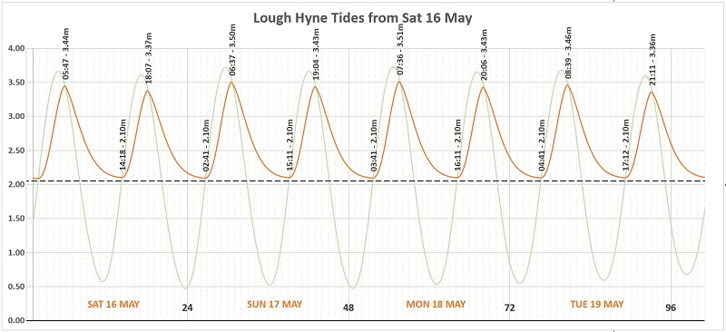

Predicted Tides at Baltimore Pier and Lough Hyne (plus 365-day chart and table)

(click on charts for higher-res images)

The Baltimore Pier tide predictions are computed by a mathematical model based on values derived from tide-height data collected at random times at Baltimore Pier since 2024. Sea-level
heights are established by photographing the steel ladders at the Pier, a useful measurement scale. Pressure is recorded too, since mean sea level
varies approximately 1cm for every unit of pressure.
The height and pressure data, combined with the prevailing astronomical positions of the Sun and Moon, allow one to solve for a set of harmonic constants (wave amplitudes and phase-lags)
for the multiple tidal constituents (M2, S2, N2, K2, M4 and many more), arriving at a “best fit” to the data collected.
These harmonic constants serve as a unique "fingerprint" of our tide at the Pier, and can be usefully used to predict. As more data gets collected, the more accurate
the model becomes.
The Lough Hyne predictions are produced by simulating, using channel-flow theory and the relative level of the outer sea tide as established above, the rate of flow entering or departing the
Lough and thus the incremental volume and, knowing the surface area, the rise or fall of Lough Hyne's water level.
Full 2026 tides Baltimore Pier
tabulated data below

- main block of wavy data: each high and low through the year [scale in cm on LHS]
- upper slightly wavy purple line: Lunar distance from Earth [Earth Radii using LHS]
- green dots: extent, in hours, by which this tide exceeds previous tide minus 24 hours [RH scale]
- lowest pink oscillating line: Moon Phase [0-1 using RH scale i.e. 0-100%]
- air pressure assumed as standard atmospheric pressure at sea-level, i.e. 1013.25 hPa (aka millibars Mercury). Mean sea level
varies by ~1cm (0.01m) per hPa, so tide height should be adjusted up for pressures below 1013.25, and down for pressures above (inverse barometer effect).
A Note About Accuracy (May 2026)
The Baltimore Pier tide is already (May 2026) more accurate than the paid-for Tide App I have. So the Baltimore Pier predictions are useful. They will get more accurate as more
data is collected, allowing the model to include more of the fundamental tidal constituents.
Note, though, that standard atmospheric pressure (1013.25hPa) is assumed. Since Mean Sea Level varies by nearly 1cm per hPa, a day with pressure of, say,
1000hPa, means the Baltimore Pier prediction must be adjusted up by 13.25cm.
The Lough Hyne predictions are still a work-in-progress. Notice that the predictions are presented in two forms: a list showing the next few days’ highs and
lows; and an annotated chart (on the “tide” page) showing a wavy graph of the tide level as it undulates up and down, with the times/levels of the high and low
waters also shown. You may notice that the annotations on the chart and the list show slightly different predicted times, not more than a few minutes though. For now, the chart
is the more accurate. I’m working on it: the chart and the list should be the same.
Obviously, LH tide heights are dependent on the outer sea-tide level relative to the sill level in the Rapids. Recall that air pressure makes the outer sea level vary
by +1cm per -1hPa pressure. This is equivalent to the height of the sill at the Rapids moving up and down by the same amount. A day with lower pressure will make the outer
sea higher and the LH-tide higher.
Full Year 2026 - Baltimore Pier & Lough Hyne (GMT: add 1 hour if DST applies)
Thu 1 Jan 2026 Baltimore Pier: Low: 09:16 1.00m ~~~ LH:11:59 2.12m
Thu 1 Jan 2026 Baltimore Pier: High: 15:01 3.43m ~~~ LH:16:06 3.20m
Thu 1 Jan 2026 Baltimore Pier: Low: 21:45 1.05m ~~~ LH:00:17 2.13m
Fri 2 Jan 2026 Baltimore Pier: High: 03:29 3.64m ~~~ LH:04:26 3.43m
Fri 2 Jan 2026 Baltimore Pier: Low: 10:25 0.86m ~~~ LH:13:05 2.12m
Fri 2 Jan 2026 Baltimore Pier: High: 16:09 3.57m ~~~ LH:17:10 3.35m
Fri 2 Jan 2026 Baltimore Pier: Low: 22:50 0.91m ~~~ LH:01:29 2.13m
Sat 3 Jan 2026 Baltimore Pier: High: 04:35 3.74m ~~~ LH:05:32 3.54m
Sat 3 Jan 2026 Baltimore Pier: Low: 11:25 0.74m ~~~ LH:14:08 2.12m
Sat 3 Jan 2026 Baltimore Pier: High: 17:13 3.69m ~~~ LH:18:11 3.48m
Sat 3 Jan 2026 Baltimore Pier: Low: 23:47 0.80m ~~~ LH:02:26 2.12m
Sun 4 Jan 2026 Baltimore Pier: High: 05:38 3.82m ~~~ LH:06:33 3.62m
Sun 4 Jan 2026 Baltimore Pier: Low: 12:16 0.67m ~~~ LH:15:07 2.12m
Sun 4 Jan 2026 Baltimore Pier: High: 18:12 3.79m ~~~ LH:19:06 3.58m
Mon 5 Jan 2026 Baltimore Pier: Low: 00:36 0.74m ~~~ LH:03:23 2.12m
Mon 5 Jan 2026 Baltimore Pier: High: 06:34 3.85m ~~~ LH:07:26 3.65m
Mon 5 Jan 2026 Baltimore Pier: Low: 13:00 0.65m ~~~ LH:15:54 2.12m
Mon 5 Jan 2026 Baltimore Pier: High: 19:04 3.85m ~~~ LH:19:56 3.64m
Tue 6 Jan 2026 Baltimore Pier: Low: 01:17 0.74m ~~~ LH:04:10 2.13m
Tue 6 Jan 2026 Baltimore Pier: High: 07:23 3.84m ~~~ LH:08:16 3.63m
Tue 6 Jan 2026 Baltimore Pier: Low: 13:36 0.68m ~~~ LH:16:39 2.12m
Tue 6 Jan 2026 Baltimore Pier: High: 19:49 3.87m ~~~ LH:20:42 3.66m
Wed 7 Jan 2026 Baltimore Pier: Low: 01:53 0.79m ~~~ LH:04:55 2.13m
Wed 7 Jan 2026 Baltimore Pier: High: 08:06 3.77m ~~~ LH:08:59 3.56m
Wed 7 Jan 2026 Baltimore Pier: Low: 14:08 0.76m ~~~ LH:17:17 2.12m
Wed 7 Jan 2026 Baltimore Pier: High: 20:30 3.83m ~~~ LH:21:23 3.61m
Thu 8 Jan 2026 Baltimore Pier: Low: 02:28 0.90m ~~~ LH:05:35 2.13m
Thu 8 Jan 2026 Baltimore Pier: High: 08:45 3.65m ~~~ LH:09:41 3.43m
Thu 8 Jan 2026 Baltimore Pier: Low: 14:40 0.87m ~~~ LH:17:53 2.12m
Thu 8 Jan 2026 Baltimore Pier: High: 21:08 3.72m ~~~ LH:22:03 3.51m
Fri 9 Jan 2026 Baltimore Pier: Low: 03:04 1.04m ~~~ LH:06:13 2.14m
Fri 9 Jan 2026 Baltimore Pier: High: 09:22 3.48m ~~~ LH:10:21 3.26m
Fri 9 Jan 2026 Baltimore Pier: Low: 15:16 1.00m ~~~ LH:18:29 2.12m
Fri 9 Jan 2026 Baltimore Pier: High: 21:46 3.56m ~~~ LH:22:45 3.35m
Sat 10 Jan 2026 Baltimore Pier: Low: 03:46 1.20m ~~~ LH:06:53 2.14m
Sat 10 Jan 2026 Baltimore Pier: High: 10:02 3.28m ~~~ LH:11:06 3.07m
Sat 10 Jan 2026 Baltimore Pier: Low: 15:58 1.15m ~~~ LH:19:09 2.13m
Sat 10 Jan 2026 Baltimore Pier: High: 22:30 3.37m ~~~ LH:23:32 3.18m
Sun 11 Jan 2026 Baltimore Pier: Low: 04:35 1.35m ~~~ LH:07:36 2.15m
Sun 11 Jan 2026 Baltimore Pier: High: 10:49 3.09m ~~~ LH:11:55 2.89m
Sun 11 Jan 2026 Baltimore Pier: Low: 16:49 1.30m ~~~ LH:19:57 2.13m
Sun 11 Jan 2026 Baltimore Pier: High: 23:22 3.19m ~~~ LH:00:27 3.02m
Mon 12 Jan 2026 Baltimore Pier: Low: 05:31 1.46m ~~~ LH:08:31 2.15m
Mon 12 Jan 2026 Baltimore Pier: High: 11:50 2.94m ~~~ LH:12:58 2.77m
Mon 12 Jan 2026 Baltimore Pier: Low: 17:48 1.41m ~~~ LH:20:50 2.13m
Tue 13 Jan 2026 Baltimore Pier: High: 00:25 3.08m ~~~ LH:01:31 2.91m
Tue 13 Jan 2026 Baltimore Pier: Low: 06:36 1.53m ~~~ LH:09:36 2.15m
Tue 13 Jan 2026 Baltimore Pier: High: 12:58 2.90m ~~~ LH:14:06 2.72m
Tue 13 Jan 2026 Baltimore Pier: Low: 18:57 1.48m ~~~ LH:21:56 2.14m
Wed 14 Jan 2026 Baltimore Pier: High: 01:28 3.06m ~~~ LH:02:36 2.87m
Wed 14 Jan 2026 Baltimore Pier: Low: 07:47 1.51m ~~~ LH:10:45 2.15m
Wed 14 Jan 2026 Baltimore Pier: High: 14:01 2.95m ~~~ LH:15:10 2.75m
Wed 14 Jan 2026 Baltimore Pier: Low: 20:09 1.47m ~~~ LH:22:59 2.14m
Thu 15 Jan 2026 Baltimore Pier: High: 02:24 3.10m ~~~ LH:03:31 2.91m
Thu 15 Jan 2026 Baltimore Pier: Low: 08:52 1.41m ~~~ LH:11:48 2.14m
Thu 15 Jan 2026 Baltimore Pier: High: 14:55 3.05m ~~~ LH:16:06 2.83m
Thu 15 Jan 2026 Baltimore Pier: Low: 21:12 1.39m ~~~ LH:23:57 2.14m
Fri 16 Jan 2026 Baltimore Pier: High: 03:14 3.17m ~~~ LH:04:20 2.98m
Fri 16 Jan 2026 Baltimore Pier: Low: 09:45 1.26m ~~~ LH:12:36 2.13m
Fri 16 Jan 2026 Baltimore Pier: High: 15:45 3.16m ~~~ LH:16:53 2.95m
Fri 16 Jan 2026 Baltimore Pier: Low: 22:02 1.28m ~~~ LH:00:41 2.14m
Sat 17 Jan 2026 Baltimore Pier: High: 03:59 3.26m ~~~ LH:05:03 3.07m
Sat 17 Jan 2026 Baltimore Pier: Low: 10:28 1.09m ~~~ LH:13:20 2.13m
Sat 17 Jan 2026 Baltimore Pier: High: 16:29 3.27m ~~~ LH:17:35 3.06m
Sat 17 Jan 2026 Baltimore Pier: Low: 22:43 1.16m ~~~ LH:01:20 2.14m
Sun 18 Jan 2026 Baltimore Pier: High: 04:39 3.36m ~~~ LH:05:41 3.18m
Sun 18 Jan 2026 Baltimore Pier: Low: 11:05 0.93m ~~~ LH:13:56 2.12m
Sun 18 Jan 2026 Baltimore Pier: High: 17:09 3.38m ~~~ LH:18:12 3.18m
Sun 18 Jan 2026 Baltimore Pier: Low: 23:19 1.04m ~~~ LH:02:00 2.14m
Mon 19 Jan 2026 Baltimore Pier: High: 05:15 3.46m ~~~ LH:06:16 3.28m
Mon 19 Jan 2026 Baltimore Pier: Low: 11:39 0.80m ~~~ LH:14:29 2.12m
Mon 19 Jan 2026 Baltimore Pier: High: 17:44 3.47m ~~~ LH:18:46 3.28m
Mon 19 Jan 2026 Baltimore Pier: Low: 23:51 0.95m ~~~ LH:02:31 2.14m
Tue 20 Jan 2026 Baltimore Pier: High: 05:49 3.56m ~~~ LH:06:46 3.38m
Tue 20 Jan 2026 Baltimore Pier: Low: 12:10 0.71m ~~~ LH:15:05 2.12m
Tue 20 Jan 2026 Baltimore Pier: High: 18:16 3.56m ~~~ LH:19:17 3.36m
Wed 21 Jan 2026 Baltimore Pier: Low: 00:20 0.89m ~~~ LH:03:07 2.14m
Wed 21 Jan 2026 Baltimore Pier: High: 06:21 3.63m ~~~ LH:07:17 3.45m
Wed 21 Jan 2026 Baltimore Pier: Low: 12:39 0.68m ~~~ LH:15:40 2.12m
Wed 21 Jan 2026 Baltimore Pier: High: 18:47 3.62m ~~~ LH:19:46 3.41m
Thu 22 Jan 2026 Baltimore Pier: Low: 00:49 0.87m ~~~ LH:03:38 2.14m
Thu 22 Jan 2026 Baltimore Pier: High: 06:52 3.67m ~~~ LH:07:50 3.48m
Thu 22 Jan 2026 Baltimore Pier: Low: 13:07 0.71m ~~~ LH:16:09 2.12m
Thu 22 Jan 2026 Baltimore Pier: High: 19:18 3.64m ~~~ LH:20:15 3.43m
Fri 23 Jan 2026 Baltimore Pier: Low: 01:19 0.90m ~~~ LH:04:19 2.14m
Fri 23 Jan 2026 Baltimore Pier: High: 07:25 3.65m ~~~ LH:08:24 3.45m
Fri 23 Jan 2026 Baltimore Pier: Low: 13:38 0.79m ~~~ LH:16:48 2.12m
Fri 23 Jan 2026 Baltimore Pier: High: 19:50 3.62m ~~~ LH:20:51 3.41m
Sat 24 Jan 2026 Baltimore Pier: Low: 01:53 0.98m ~~~ LH:04:59 2.13m
Sat 24 Jan 2026 Baltimore Pier: High: 08:02 3.56m ~~~ LH:09:03 3.35m
Sat 24 Jan 2026 Baltimore Pier: Low: 14:14 0.91m ~~~ LH:17:26 2.12m
Sat 24 Jan 2026 Baltimore Pier: High: 20:28 3.55m ~~~ LH:21:31 3.34m
Sun 25 Jan 2026 Baltimore Pier: Low: 02:37 1.10m ~~~ LH:05:44 2.14m
Sun 25 Jan 2026 Baltimore Pier: High: 08:44 3.42m ~~~ LH:09:49 3.20m
Sun 25 Jan 2026 Baltimore Pier: Low: 15:00 1.07m ~~~ LH:18:10 2.12m
Sun 25 Jan 2026 Baltimore Pier: High: 21:14 3.44m ~~~ LH:22:20 3.23m
Mon 26 Jan 2026 Baltimore Pier: Low: 03:35 1.23m ~~~ LH:06:39 2.14m
Mon 26 Jan 2026 Baltimore Pier: High: 09:38 3.23m ~~~ LH:10:47 3.02m
Mon 26 Jan 2026 Baltimore Pier: Low: 16:01 1.22m ~~~ LH:19:09 2.13m
Mon 26 Jan 2026 Baltimore Pier: High: 22:15 3.31m ~~~ LH:23:24 3.12m
Tue 27 Jan 2026 Baltimore Pier: Low: 04:53 1.33m ~~~ LH:07:50 2.14m
Tue 27 Jan 2026 Baltimore Pier: High: 10:50 3.07m ~~~ LH:12:05 2.87m
Tue 27 Jan 2026 Baltimore Pier: Low: 17:21 1.33m ~~~ LH:20:19 2.13m
Tue 27 Jan 2026 Baltimore Pier: High: 23:34 3.23m ~~~ LH:00:44 3.05m
Wed 28 Jan 2026 Baltimore Pier: Low: 06:28 1.37m ~~~ LH:09:15 2.14m
Wed 28 Jan 2026 Baltimore Pier: High: 12:21 3.00m ~~~ LH:13:34 2.81m
Wed 28 Jan 2026 Baltimore Pier: Low: 18:57 1.36m ~~~ LH:21:40 2.13m
Thu 29 Jan 2026 Baltimore Pier: High: 01:03 3.26m ~~~ LH:02:08 3.08m
Thu 29 Jan 2026 Baltimore Pier: Low: 08:05 1.29m ~~~ LH:10:48 2.13m
Thu 29 Jan 2026 Baltimore Pier: High: 13:49 3.08m ~~~ LH:14:59 2.87m
Thu 29 Jan 2026 Baltimore Pier: Low: 20:31 1.28m ~~~ LH:23:05 2.12m
Fri 30 Jan 2026 Baltimore Pier: High: 02:24 3.39m ~~~ LH:03:25 3.19m
Fri 30 Jan 2026 Baltimore Pier: Low: 09:27 1.12m ~~~ LH:12:08 2.12m
Fri 30 Jan 2026 Baltimore Pier: High: 15:05 3.25m ~~~ LH:16:13 3.02m
Fri 30 Jan 2026 Baltimore Pier: Low: 21:49 1.11m ~~~ LH:00:24 2.12m
Sat 31 Jan 2026 Baltimore Pier: High: 03:34 3.56m ~~~ LH:04:35 3.35m
Sat 31 Jan 2026 Baltimore Pier: Low: 10:33 0.92m ~~~ LH:13:16 2.12m
Sat 31 Jan 2026 Baltimore Pier: High: 16:10 3.45m ~~~ LH:17:14 3.21m
Sat 31 Jan 2026 Baltimore Pier: Low: 22:51 0.92m ~~~ LH:01:29 2.12m
Sun 1 Feb 2026 Baltimore Pier: High: 04:34 3.72m ~~~ LH:05:32 3.51m
Sun 1 Feb 2026 Baltimore Pier: Low: 11:25 0.74m ~~~ LH:14:07 2.12m
Sun 1 Feb 2026 Baltimore Pier: High: 17:06 3.64m ~~~ LH:18:07 3.39m
Sun 1 Feb 2026 Baltimore Pier: Low: 23:39 0.76m ~~~ LH:02:17 2.12m
Mon 2 Feb 2026 Baltimore Pier: High: 05:27 3.85m ~~~ LH:06:22 3.63m
Mon 2 Feb 2026 Baltimore Pier: Low: 12:06 0.60m ~~~ LH:14:54 2.11m
Mon 2 Feb 2026 Baltimore Pier: High: 17:55 3.79m ~~~ LH:18:51 3.56m
Tue 3 Feb 2026 Baltimore Pier: Low: 00:17 0.67m ~~~ LH:03:03 2.12m
Tue 3 Feb 2026 Baltimore Pier: High: 06:12 3.92m ~~~ LH:07:05 3.70m
Tue 3 Feb 2026 Baltimore Pier: Low: 12:39 0.53m ~~~ LH:15:32 2.11m
Tue 3 Feb 2026 Baltimore Pier: High: 18:38 3.89m ~~~ LH:19:31 3.67m
Wed 4 Feb 2026 Baltimore Pier: Low: 00:49 0.64m ~~~ LH:03:40 2.12m
Wed 4 Feb 2026 Baltimore Pier: High: 06:52 3.92m ~~~ LH:07:44 3.71m
Wed 4 Feb 2026 Baltimore Pier: Low: 13:06 0.51m ~~~ LH:16:09 2.11m
Wed 4 Feb 2026 Baltimore Pier: High: 19:16 3.92m ~~~ LH:20:07 3.70m
Thu 5 Feb 2026 Baltimore Pier: Low: 01:16 0.69m ~~~ LH:04:16 2.13m
Thu 5 Feb 2026 Baltimore Pier: High: 07:28 3.86m ~~~ LH:08:19 3.66m
Thu 5 Feb 2026 Baltimore Pier: Low: 13:30 0.56m ~~~ LH:16:37 2.11m
Thu 5 Feb 2026 Baltimore Pier: High: 19:51 3.87m ~~~ LH:20:44 3.65m
Fri 6 Feb 2026 Baltimore Pier: Low: 01:41 0.80m ~~~ LH:04:50 2.13m
Fri 6 Feb 2026 Baltimore Pier: High: 08:01 3.74m ~~~ LH:08:55 3.52m
Fri 6 Feb 2026 Baltimore Pier: Low: 13:54 0.67m ~~~ LH:17:11 2.11m
Fri 6 Feb 2026 Baltimore Pier: High: 20:25 3.74m ~~~ LH:21:19 3.53m
Sat 7 Feb 2026 Baltimore Pier: Low: 02:08 0.96m ~~~ LH:05:18 2.14m
Sat 7 Feb 2026 Baltimore Pier: High: 08:33 3.55m ~~~ LH:09:30 3.34m
Sat 7 Feb 2026 Baltimore Pier: Low: 14:22 0.83m ~~~ LH:17:46 2.12m
Sat 7 Feb 2026 Baltimore Pier: High: 20:59 3.54m ~~~ LH:21:57 3.33m
Sun 8 Feb 2026 Baltimore Pier: Low: 02:39 1.16m ~~~ LH:05:54 2.15m
Sun 8 Feb 2026 Baltimore Pier: High: 09:07 3.31m ~~~ LH:10:09 3.12m
Sun 8 Feb 2026 Baltimore Pier: Low: 14:55 1.02m ~~~ LH:18:21 2.12m
Sun 8 Feb 2026 Baltimore Pier: High: 21:38 3.31m ~~~ LH:22:43 3.11m
Mon 9 Feb 2026 Baltimore Pier: Low: 03:19 1.36m ~~~ LH:06:34 2.15m
Mon 9 Feb 2026 Baltimore Pier: High: 09:47 3.06m ~~~ LH:10:57 2.88m
Mon 9 Feb 2026 Baltimore Pier: Low: 15:40 1.23m ~~~ LH:19:06 2.12m
Mon 9 Feb 2026 Baltimore Pier: High: 22:26 3.07m ~~~ LH:23:36 2.89m
Tue 10 Feb 2026 Baltimore Pier: Low: 04:14 1.55m ~~~ LH:07:27 2.16m
Tue 10 Feb 2026 Baltimore Pier: High: 10:44 2.83m ~~~ LH:11:57 2.68m
Tue 10 Feb 2026 Baltimore Pier: Low: 16:41 1.42m ~~~ LH:19:59 2.12m
Tue 10 Feb 2026 Baltimore Pier: High: 23:35 2.89m ~~~ LH:00:48 2.74m
Wed 11 Feb 2026 Baltimore Pier: Low: 05:36 1.66m ~~~ LH:08:38 2.16m
Wed 11 Feb 2026 Baltimore Pier: High: 12:10 2.69m ~~~ LH:13:22 2.56m
Wed 11 Feb 2026 Baltimore Pier: Low: 18:04 1.55m ~~~ LH:21:11 2.12m
Thu 12 Feb 2026 Baltimore Pier: High: 00:56 2.84m ~~~ LH:02:07 2.69m
Thu 12 Feb 2026 Baltimore Pier: Low: 07:13 1.65m ~~~ LH:10:15 2.15m
Thu 12 Feb 2026 Baltimore Pier: High: 13:33 2.73m ~~~ LH:14:47 2.55m
Thu 12 Feb 2026 Baltimore Pier: Low: 19:35 1.56m ~~~ LH:22:29 2.13m
Fri 13 Feb 2026 Baltimore Pier: High: 02:04 2.93m ~~~ LH:03:16 2.74m
Fri 13 Feb 2026 Baltimore Pier: Low: 08:33 1.51m ~~~ LH:11:31 2.14m
Fri 13 Feb 2026 Baltimore Pier: High: 14:36 2.86m ~~~ LH:15:51 2.66m
Fri 13 Feb 2026 Baltimore Pier: Low: 20:48 1.45m ~~~ LH:23:34 2.13m
Sat 14 Feb 2026 Baltimore Pier: High: 02:57 3.08m ~~~ LH:04:07 2.88m
Sat 14 Feb 2026 Baltimore Pier: Low: 09:30 1.28m ~~~ LH:12:24 2.13m
Sat 14 Feb 2026 Baltimore Pier: High: 15:26 3.03m ~~~ LH:16:37 2.81m
Sat 14 Feb 2026 Baltimore Pier: Low: 21:41 1.28m ~~~ LH:00:20 2.13m
Sun 15 Feb 2026 Baltimore Pier: High: 03:39 3.25m ~~~ LH:04:46 3.05m
Sun 15 Feb 2026 Baltimore Pier: Low: 10:12 1.04m ~~~ LH:13:04 2.12m
Sun 15 Feb 2026 Baltimore Pier: High: 16:07 3.20m ~~~ LH:17:16 2.98m
Sun 15 Feb 2026 Baltimore Pier: Low: 22:21 1.10m ~~~ LH:00:57 2.13m
Mon 16 Feb 2026 Baltimore Pier: High: 04:16 3.42m ~~~ LH:05:16 3.23m
Mon 16 Feb 2026 Baltimore Pier: Low: 10:47 0.82m ~~~ LH:13:35 2.12m
Mon 16 Feb 2026 Baltimore Pier: High: 16:42 3.36m ~~~ LH:17:45 3.15m
Mon 16 Feb 2026 Baltimore Pier: Low: 22:55 0.92m ~~~ LH:01:32 2.13m
Tue 17 Feb 2026 Baltimore Pier: High: 04:48 3.59m ~~~ LH:05:45 3.40m
Tue 17 Feb 2026 Baltimore Pier: Low: 11:18 0.64m ~~~ LH:14:07 2.12m
Tue 17 Feb 2026 Baltimore Pier: High: 17:13 3.51m ~~~ LH:18:16 3.30m
Tue 17 Feb 2026 Baltimore Pier: Low: 23:25 0.78m ~~~ LH:02:06 2.13m
Wed 18 Feb 2026 Baltimore Pier: High: 05:19 3.73m ~~~ LH:06:15 3.54m
Wed 18 Feb 2026 Baltimore Pier: Low: 11:46 0.53m ~~~ LH:14:38 2.11m
Wed 18 Feb 2026 Baltimore Pier: High: 17:43 3.63m ~~~ LH:18:43 3.42m
Wed 18 Feb 2026 Baltimore Pier: Low: 23:52 0.70m ~~~ LH:02:40 2.13m
Thu 19 Feb 2026 Baltimore Pier: High: 05:50 3.82m ~~~ LH:06:45 3.63m
Thu 19 Feb 2026 Baltimore Pier: Low: 12:14 0.49m ~~~ LH:15:09 2.11m
Thu 19 Feb 2026 Baltimore Pier: High: 18:14 3.71m ~~~ LH:19:12 3.50m
Fri 20 Feb 2026 Baltimore Pier: Low: 00:19 0.68m ~~~ LH:03:10 2.12m
Fri 20 Feb 2026 Baltimore Pier: High: 06:22 3.84m ~~~ LH:07:15 3.65m
Fri 20 Feb 2026 Baltimore Pier: Low: 12:41 0.52m ~~~ LH:15:45 2.11m
Fri 20 Feb 2026 Baltimore Pier: High: 18:47 3.74m ~~~ LH:19:45 3.52m
Sat 21 Feb 2026 Baltimore Pier: Low: 00:48 0.73m ~~~ LH:03:47 2.12m
Sat 21 Feb 2026 Baltimore Pier: High: 06:57 3.79m ~~~ LH:07:54 3.59m
Sat 21 Feb 2026 Baltimore Pier: Low: 13:10 0.62m ~~~ LH:16:20 2.11m
Sat 21 Feb 2026 Baltimore Pier: High: 19:23 3.70m ~~~ LH:20:22 3.48m
Sun 22 Feb 2026 Baltimore Pier: Low: 01:21 0.84m ~~~ LH:04:31 2.13m
Sun 22 Feb 2026 Baltimore Pier: High: 07:37 3.67m ~~~ LH:08:37 3.45m
Sun 22 Feb 2026 Baltimore Pier: Low: 13:45 0.77m ~~~ LH:17:06 2.11m
Sun 22 Feb 2026 Baltimore Pier: High: 20:07 3.60m ~~~ LH:21:07 3.38m
Mon 23 Feb 2026 Baltimore Pier: Low: 02:03 1.02m ~~~ LH:05:22 2.13m
Mon 23 Feb 2026 Baltimore Pier: High: 08:25 3.47m ~~~ LH:09:27 3.25m
Mon 23 Feb 2026 Baltimore Pier: Low: 14:30 0.96m ~~~ LH:17:59 2.12m
Mon 23 Feb 2026 Baltimore Pier: High: 20:59 3.45m ~~~ LH:22:05 3.22m
Tue 24 Feb 2026 Baltimore Pier: Low: 03:01 1.22m ~~~ LH:06:25 2.13m
Tue 24 Feb 2026 Baltimore Pier: High: 09:23 3.23m ~~~ LH:10:32 3.01m
Tue 24 Feb 2026 Baltimore Pier: Low: 15:31 1.16m ~~~ LH:18:59 2.12m
Tue 24 Feb 2026 Baltimore Pier: High: 22:05 3.26m ~~~ LH:23:17 3.05m
Wed 25 Feb 2026 Baltimore Pier: Low: 04:32 1.41m ~~~ LH:07:42 2.14m
Wed 25 Feb 2026 Baltimore Pier: High: 10:38 3.00m ~~~ LH:11:54 2.79m
Wed 25 Feb 2026 Baltimore Pier: Low: 17:05 1.32m ~~~ LH:20:17 2.11m
Wed 25 Feb 2026 Baltimore Pier: High: 23:32 3.13m ~~~ LH:00:46 2.94m
Thu 26 Feb 2026 Baltimore Pier: Low: 06:35 1.48m ~~~ LH:09:18 2.14m
Thu 26 Feb 2026 Baltimore Pier: High: 12:17 2.88m ~~~ LH:13:33 2.69m
Thu 26 Feb 2026 Baltimore Pier: Low: 19:01 1.36m ~~~ LH:21:48 2.11m
Fri 27 Feb 2026 Baltimore Pier: High: 01:09 3.15m ~~~ LH:02:18 2.95m
Fri 27 Feb 2026 Baltimore Pier: Low: 08:15 1.38m ~~~ LH:10:55 2.13m
Fri 27 Feb 2026 Baltimore Pier: High: 13:51 2.96m ~~~ LH:15:04 2.74m
Fri 27 Feb 2026 Baltimore Pier: Low: 20:35 1.26m ~~~ LH:23:18 2.11m
Sat 28 Feb 2026 Baltimore Pier: High: 02:29 3.30m ~~~ LH:03:37 3.09m
Sat 28 Feb 2026 Baltimore Pier: Low: 09:31 1.17m ~~~ LH:12:14 2.13m
Sat 28 Feb 2026 Baltimore Pier: High: 15:03 3.16m ~~~ LH:16:12 2.92m
Sat 28 Feb 2026 Baltimore Pier: Low: 21:45 1.06m ~~~ LH:00:26 2.11m
Sun 1 Mar 2026 Baltimore Pier: High: 03:31 3.51m ~~~ LH:04:34 3.29m
Sun 1 Mar 2026 Baltimore Pier: Low: 10:26 0.92m ~~~ LH:13:07 2.12m
Sun 1 Mar 2026 Baltimore Pier: High: 15:58 3.40m ~~~ LH:17:04 3.14m
Sun 1 Mar 2026 Baltimore Pier: Low: 22:37 0.85m ~~~ LH:01:20 2.11m
Mon 2 Mar 2026 Baltimore Pier: High: 04:21 3.71m ~~~ LH:05:19 3.48m
Mon 2 Mar 2026 Baltimore Pier: Low: 11:07 0.71m ~~~ LH:13:52 2.12m
Mon 2 Mar 2026 Baltimore Pier: High: 16:45 3.61m ~~~ LH:17:46 3.36m
Mon 2 Mar 2026 Baltimore Pier: Low: 23:15 0.69m ~~~ LH:01:57 2.11m
Tue 3 Mar 2026 Baltimore Pier: High: 05:03 3.85m ~~~ LH:05:57 3.63m
Tue 3 Mar 2026 Baltimore Pier: Low: 11:39 0.54m ~~~ LH:14:26 2.11m
Tue 3 Mar 2026 Baltimore Pier: High: 17:25 3.77m ~~~ LH:18:22 3.53m
Tue 3 Mar 2026 Baltimore Pier: Low: 23:46 0.59m ~~~ LH:02:34 2.12m
Wed 4 Mar 2026 Baltimore Pier: High: 05:40 3.93m ~~~ LH:06:33 3.71m
Wed 4 Mar 2026 Baltimore Pier: Low: 12:05 0.45m ~~~ LH:14:59 2.11m
Wed 4 Mar 2026 Baltimore Pier: High: 18:02 3.86m ~~~ LH:18:57 3.62m
Thu 5 Mar 2026 Baltimore Pier: Low: 00:11 0.57m ~~~ LH:03:05 2.12m
Thu 5 Mar 2026 Baltimore Pier: High: 06:14 3.94m ~~~ LH:07:06 3.72m
Thu 5 Mar 2026 Baltimore Pier: Low: 12:28 0.42m ~~~ LH:15:29 2.11m
Thu 5 Mar 2026 Baltimore Pier: High: 18:36 3.87m ~~~ LH:19:29 3.64m
Fri 6 Mar 2026 Baltimore Pier: Low: 00:33 0.63m ~~~ LH:03:33 2.12m
Fri 6 Mar 2026 Baltimore Pier: High: 06:46 3.87m ~~~ LH:07:37 3.67m
Fri 6 Mar 2026 Baltimore Pier: Low: 12:49 0.47m ~~~ LH:15:59 2.11m
Fri 6 Mar 2026 Baltimore Pier: High: 19:09 3.79m ~~~ LH:20:04 3.56m
Sat 7 Mar 2026 Baltimore Pier: Low: 00:54 0.75m ~~~ LH:04:00 2.13m
Sat 7 Mar 2026 Baltimore Pier: High: 07:18 3.73m ~~~ LH:08:11 3.53m
Sat 7 Mar 2026 Baltimore Pier: Low: 13:11 0.58m ~~~ LH:16:31 2.11m
Sat 7 Mar 2026 Baltimore Pier: High: 19:42 3.63m ~~~ LH:20:39 3.41m
Sun 8 Mar 2026 Baltimore Pier: Low: 01:17 0.91m ~~~ LH:04:29 2.14m
Sun 8 Mar 2026 Baltimore Pier: High: 07:49 3.54m ~~~ LH:08:46 3.34m
Sun 8 Mar 2026 Baltimore Pier: Low: 13:37 0.75m ~~~ LH:17:06 2.11m
Sun 8 Mar 2026 Baltimore Pier: High: 20:16 3.42m ~~~ LH:21:17 3.20m
Mon 9 Mar 2026 Baltimore Pier: Low: 01:45 1.11m ~~~ LH:05:03 2.14m
Mon 9 Mar 2026 Baltimore Pier: High: 08:22 3.30m ~~~ LH:09:25 3.11m
Mon 9 Mar 2026 Baltimore Pier: Low: 14:09 0.96m ~~~ LH:17:43 2.12m
Mon 9 Mar 2026 Baltimore Pier: High: 20:53 3.17m ~~~ LH:22:02 2.97m
Tue 10 Mar 2026 Baltimore Pier: Low: 02:21 1.33m ~~~ LH:05:43 2.15m
Tue 10 Mar 2026 Baltimore Pier: High: 08:58 3.04m ~~~ LH:10:09 2.87m
Tue 10 Mar 2026 Baltimore Pier: Low: 14:52 1.19m ~~~ LH:18:26 2.12m
Tue 10 Mar 2026 Baltimore Pier: High: 21:37 2.93m ~~~ LH:22:56 2.75m
Wed 11 Mar 2026 Baltimore Pier: Low: 03:13 1.54m ~~~ LH:06:36 2.15m
Wed 11 Mar 2026 Baltimore Pier: High: 09:46 2.79m ~~~ LH:11:07 2.64m
Wed 11 Mar 2026 Baltimore Pier: Low: 15:53 1.41m ~~~ LH:19:25 2.12m
Wed 11 Mar 2026 Baltimore Pier: High: 22:42 2.74m ~~~ LH:00:05 2.59m
Thu 12 Mar 2026 Baltimore Pier: Low: 04:41 1.69m ~~~ LH:07:49 2.15m
Thu 12 Mar 2026 Baltimore Pier: High: 11:13 2.60m ~~~ LH:12:35 2.48m
Thu 12 Mar 2026 Baltimore Pier: Low: 17:26 1.55m ~~~ LH:20:39 2.11m
Fri 13 Mar 2026 Baltimore Pier: High: 00:19 2.69m ~~~ LH:01:36 2.55m
Fri 13 Mar 2026 Baltimore Pier: Low: 06:38 1.68m ~~~ LH:09:34 2.14m
Fri 13 Mar 2026 Baltimore Pier: High: 12:58 2.60m ~~~ LH:14:14 2.46m
Fri 13 Mar 2026 Baltimore Pier: Low: 19:02 1.54m ~~~ LH:21:57 2.11m
Sat 14 Mar 2026 Baltimore Pier: High: 01:36 2.82m ~~~ LH:02:52 2.64m
Sat 14 Mar 2026 Baltimore Pier: Low: 08:01 1.51m ~~~ LH:11:01 2.13m
Sat 14 Mar 2026 Baltimore Pier: High: 14:06 2.76m ~~~ LH:15:22 2.57m
Sat 14 Mar 2026 Baltimore Pier: Low: 20:14 1.40m ~~~ LH:23:04 2.12m
Sun 15 Mar 2026 Baltimore Pier: High: 02:28 3.03m ~~~ LH:03:39 2.83m
Sun 15 Mar 2026 Baltimore Pier: Low: 08:58 1.26m ~~~ LH:11:56 2.12m
Sun 15 Mar 2026 Baltimore Pier: High: 14:52 2.96m ~~~ LH:16:07 2.74m
Sun 15 Mar 2026 Baltimore Pier: Low: 21:05 1.20m ~~~ LH:23:49 2.12m
Mon 16 Mar 2026 Baltimore Pier: High: 03:07 3.26m ~~~ LH:04:14 3.06m
Mon 16 Mar 2026 Baltimore Pier: Low: 09:40 0.99m ~~~ LH:12:32 2.12m
Mon 16 Mar 2026 Baltimore Pier: High: 15:29 3.17m ~~~ LH:16:37 2.94m
Mon 16 Mar 2026 Baltimore Pier: Low: 21:45 0.97m ~~~ LH:00:29 2.12m
Tue 17 Mar 2026 Baltimore Pier: High: 03:41 3.49m ~~~ LH:04:42 3.29m
Tue 17 Mar 2026 Baltimore Pier: Low: 10:14 0.74m ~~~ LH:13:06 2.12m
Tue 17 Mar 2026 Baltimore Pier: High: 16:01 3.37m ~~~ LH:17:07 3.13m
Tue 17 Mar 2026 Baltimore Pier: Low: 22:19 0.77m ~~~ LH:00:59 2.12m
Wed 18 Mar 2026 Baltimore Pier: High: 04:12 3.68m ~~~ LH:05:09 3.49m
Wed 18 Mar 2026 Baltimore Pier: Low: 10:45 0.55m ~~~ LH:13:37 2.11m
Wed 18 Mar 2026 Baltimore Pier: High: 16:32 3.54m ~~~ LH:17:35 3.31m
Wed 18 Mar 2026 Baltimore Pier: Low: 22:50 0.62m ~~~ LH:01:34 2.12m
Thu 19 Mar 2026 Baltimore Pier: High: 04:43 3.82m ~~~ LH:05:38 3.63m
Thu 19 Mar 2026 Baltimore Pier: Low: 11:15 0.43m ~~~ LH:14:10 2.11m
Thu 19 Mar 2026 Baltimore Pier: High: 17:04 3.66m ~~~ LH:18:05 3.44m
Thu 19 Mar 2026 Baltimore Pier: Low: 23:20 0.53m ~~~ LH:02:06 2.11m
Fri 20 Mar 2026 Baltimore Pier: High: 05:18 3.90m ~~~ LH:06:12 3.71m
Fri 20 Mar 2026 Baltimore Pier: Low: 11:45 0.40m ~~~ LH:14:41 2.11m
Fri 20 Mar 2026 Baltimore Pier: High: 17:40 3.74m ~~~ LH:18:38 3.52m
Fri 20 Mar 2026 Baltimore Pier: Low: 23:51 0.53m ~~~ LH:02:50 2.11m
Sat 21 Mar 2026 Baltimore Pier: High: 05:56 3.90m ~~~ LH:06:49 3.71m
Sat 21 Mar 2026 Baltimore Pier: Low: 12:17 0.44m ~~~ LH:15:20 2.11m
Sat 21 Mar 2026 Baltimore Pier: High: 18:21 3.75m ~~~ LH:19:18 3.53m
Sun 22 Mar 2026 Baltimore Pier: Low: 00:26 0.61m ~~~ LH:03:30 2.12m
Sun 22 Mar 2026 Baltimore Pier: High: 06:39 3.82m ~~~ LH:07:35 3.62m
Sun 22 Mar 2026 Baltimore Pier: Low: 12:52 0.55m ~~~ LH:16:09 2.11m
Sun 22 Mar 2026 Baltimore Pier: High: 19:07 3.69m ~~~ LH:20:07 3.46m
Mon 23 Mar 2026 Baltimore Pier: Low: 01:04 0.76m ~~~ LH:04:20 2.12m
Mon 23 Mar 2026 Baltimore Pier: High: 07:28 3.67m ~~~ LH:08:27 3.45m
Mon 23 Mar 2026 Baltimore Pier: Low: 13:33 0.71m ~~~ LH:16:58 2.11m
Mon 23 Mar 2026 Baltimore Pier: High: 20:00 3.56m ~~~ LH:21:02 3.33m
Tue 24 Mar 2026 Baltimore Pier: Low: 01:51 0.97m ~~~ LH:05:18 2.12m
Tue 24 Mar 2026 Baltimore Pier: High: 08:24 3.46m ~~~ LH:09:25 3.23m
Tue 24 Mar 2026 Baltimore Pier: Low: 14:24 0.91m ~~~ LH:18:01 2.11m
Tue 24 Mar 2026 Baltimore Pier: High: 21:01 3.38m ~~~ LH:22:06 3.15m
Wed 25 Mar 2026 Baltimore Pier: Low: 02:52 1.22m ~~~ LH:06:26 2.13m
Wed 25 Mar 2026 Baltimore Pier: High: 09:27 3.21m ~~~ LH:10:37 2.98m
Wed 25 Mar 2026 Baltimore Pier: Low: 15:31 1.12m ~~~ LH:19:12 2.11m
Wed 25 Mar 2026 Baltimore Pier: High: 22:12 3.18m ~~~ LH:23:25 2.96m
Thu 26 Mar 2026 Baltimore Pier: Low: 04:31 1.44m ~~~ LH:07:46 2.13m
Thu 26 Mar 2026 Baltimore Pier: High: 10:43 2.98m ~~~ LH:11:56 2.77m
Thu 26 Mar 2026 Baltimore Pier: Low: 17:17 1.28m ~~~ LH:20:33 2.11m
Thu 26 Mar 2026 Baltimore Pier: High: 23:37 3.04m ~~~ LH:00:54 2.84m
Fri 27 Mar 2026 Baltimore Pier: Low: 06:40 1.49m ~~~ LH:09:19 2.13m
Fri 27 Mar 2026 Baltimore Pier: High: 12:15 2.86m ~~~ LH:13:31 2.66m
Fri 27 Mar 2026 Baltimore Pier: Low: 19:05 1.28m ~~~ LH:21:57 2.10m
Sat 28 Mar 2026 Baltimore Pier: High: 01:09 3.07m ~~~ LH:02:22 2.86m
Sat 28 Mar 2026 Baltimore Pier: Low: 08:08 1.37m ~~~ LH:10:49 2.13m
Sat 28 Mar 2026 Baltimore Pier: High: 13:41 2.95m ~~~ LH:14:55 2.72m
Sat 28 Mar 2026 Baltimore Pier: Low: 20:25 1.16m ~~~ LH:23:16 2.10m
Sun 29 Mar 2026 Baltimore Pier: High: 03:20 3.24m ~~~ LH:04:29 3.01m
Sun 29 Mar 2026 Baltimore Pier: Low: 10:13 1.16m ~~~ LH:12:59 2.12m
Sun 29 Mar 2026 Baltimore Pier: High: 15:45 3.16m ~~~ LH:16:54 2.90m
Sun 29 Mar 2026 Baltimore Pier: Low: 22:24 0.98m ~~~ LH:01:12 2.11m
Mon 30 Mar 2026 Baltimore Pier: High: 04:13 3.45m ~~~ LH:05:15 3.21m
Mon 30 Mar 2026 Baltimore Pier: Low: 11:00 0.93m ~~~ LH:13:46 2.12m
Mon 30 Mar 2026 Baltimore Pier: High: 16:32 3.39m ~~~ LH:17:36 3.12m
Mon 30 Mar 2026 Baltimore Pier: Low: 23:08 0.79m ~~~ LH:01:57 2.11m
Tue 31 Mar 2026 Baltimore Pier: High: 04:54 3.64m ~~~ LH:05:55 3.40m
Tue 31 Mar 2026 Baltimore Pier: Low: 11:35 0.72m ~~~ LH:14:22 2.11m
Tue 31 Mar 2026 Baltimore Pier: High: 17:12 3.58m ~~~ LH:18:14 3.31m
Tue 31 Mar 2026 Baltimore Pier: Low: 23:42 0.65m ~~~ LH:02:29 2.11m
Wed 1 Apr 2026 Baltimore Pier: High: 05:31 3.78m ~~~ LH:06:26 3.54m
Wed 1 Apr 2026 Baltimore Pier: Low: 12:03 0.56m ~~~ LH:14:56 2.11m
Wed 1 Apr 2026 Baltimore Pier: High: 17:48 3.71m ~~~ LH:18:45 3.45m
Wed 1 Apr 2026 Baltimore Pier: Low: 00:09 0.58m ~~~ LH:02:59 2.11m
Thu 2 Apr 2026 Baltimore Pier: High: 06:04 3.85m ~~~ LH:06:58 3.62m
Thu 2 Apr 2026 Baltimore Pier: Low: 12:28 0.47m ~~~ LH:15:26 2.11m
Thu 2 Apr 2026 Baltimore Pier: High: 18:23 3.75m ~~~ LH:19:19 3.51m
Thu 2 Apr 2026 Baltimore Pier: Low: 00:32 0.57m ~~~ LH:03:25 2.11m
Fri 3 Apr 2026 Baltimore Pier: High: 06:37 3.85m ~~~ LH:07:30 3.63m
Fri 3 Apr 2026 Baltimore Pier: Low: 12:50 0.45m ~~~ LH:15:56 2.11m
Fri 3 Apr 2026 Baltimore Pier: High: 18:57 3.72m ~~~ LH:19:54 3.48m
Fri 3 Apr 2026 Baltimore Pier: Low: 00:54 0.63m ~~~ LH:03:57 2.12m
Sat 4 Apr 2026 Baltimore Pier: High: 07:09 3.77m ~~~ LH:08:03 3.56m
Sat 4 Apr 2026 Baltimore Pier: Low: 13:13 0.50m ~~~ LH:16:28 2.11m
Sat 4 Apr 2026 Baltimore Pier: High: 19:31 3.61m ~~~ LH:20:29 3.38m
Sun 5 Apr 2026 Baltimore Pier: Low: 01:16 0.74m ~~~ LH:04:25 2.12m
Sun 5 Apr 2026 Baltimore Pier: High: 07:43 3.64m ~~~ LH:08:37 3.44m
Sun 5 Apr 2026 Baltimore Pier: Low: 13:37 0.61m ~~~ LH:16:57 2.11m
Sun 5 Apr 2026 Baltimore Pier: High: 20:06 3.45m ~~~ LH:21:06 3.22m
Mon 6 Apr 2026 Baltimore Pier: Low: 01:40 0.88m ~~~ LH:04:56 2.13m
Mon 6 Apr 2026 Baltimore Pier: High: 08:16 3.46m ~~~ LH:09:15 3.27m
Mon 6 Apr 2026 Baltimore Pier: Low: 14:06 0.77m ~~~ LH:17:36 2.11m
Mon 6 Apr 2026 Baltimore Pier: High: 20:42 3.25m ~~~ LH:21:46 3.03m
Tue 7 Apr 2026 Baltimore Pier: Low: 02:10 1.06m ~~~ LH:05:30 2.13m
Tue 7 Apr 2026 Baltimore Pier: High: 08:51 3.25m ~~~ LH:09:56 3.07m
Tue 7 Apr 2026 Baltimore Pier: Low: 14:40 0.96m ~~~ LH:18:17 2.11m
Tue 7 Apr 2026 Baltimore Pier: High: 21:19 3.04m ~~~ LH:22:31 2.84m
Wed 8 Apr 2026 Baltimore Pier: Low: 02:47 1.25m ~~~ LH:06:13 2.13m
Wed 8 Apr 2026 Baltimore Pier: High: 09:28 3.03m ~~~ LH:10:41 2.86m
Wed 8 Apr 2026 Baltimore Pier: Low: 15:23 1.18m ~~~ LH:19:02 2.11m
Wed 8 Apr 2026 Baltimore Pier: High: 22:00 2.85m ~~~ LH:23:22 2.66m
Thu 9 Apr 2026 Baltimore Pier: Low: 03:37 1.45m ~~~ LH:07:08 2.13m
Thu 9 Apr 2026 Baltimore Pier: High: 10:13 2.82m ~~~ LH:11:38 2.65m
Thu 9 Apr 2026 Baltimore Pier: Low: 16:25 1.37m ~~~ LH:19:57 2.11m
Thu 9 Apr 2026 Baltimore Pier: High: 22:55 2.70m ~~~ LH:00:28 2.54m
Fri 10 Apr 2026 Baltimore Pier: Low: 05:03 1.60m ~~~ LH:08:18 2.13m
Fri 10 Apr 2026 Baltimore Pier: High: 11:21 2.65m ~~~ LH:12:53 2.50m
Fri 10 Apr 2026 Baltimore Pier: Low: 17:56 1.47m ~~~ LH:21:07 2.11m
Fri 10 Apr 2026 Baltimore Pier: High: 00:24 2.65m ~~~ LH:01:51 2.50m
Sat 11 Apr 2026 Baltimore Pier: Low: 06:54 1.59m ~~~ LH:09:45 2.12m
Sat 11 Apr 2026 Baltimore Pier: High: 13:03 2.61m ~~~ LH:14:23 2.47m
Sat 11 Apr 2026 Baltimore Pier: Low: 19:20 1.43m ~~~ LH:22:17 2.11m
Sun 12 Apr 2026 Baltimore Pier: High: 01:48 2.77m ~~~ LH:03:07 2.60m
Sun 12 Apr 2026 Baltimore Pier: Low: 08:11 1.44m ~~~ LH:11:09 2.12m
Sun 12 Apr 2026 Baltimore Pier: High: 14:15 2.74m ~~~ LH:15:31 2.56m
Sun 12 Apr 2026 Baltimore Pier: Low: 20:26 1.29m ~~~ LH:23:20 2.11m
Mon 13 Apr 2026 Baltimore Pier: High: 02:43 2.99m ~~~ LH:03:56 2.80m
Mon 13 Apr 2026 Baltimore Pier: Low: 09:08 1.22m ~~~ LH:12:04 2.12m
Mon 13 Apr 2026 Baltimore Pier: High: 15:02 2.95m ~~~ LH:16:16 2.73m
Mon 13 Apr 2026 Baltimore Pier: Low: 21:18 1.09m ~~~ LH:00:07 2.11m
Tue 14 Apr 2026 Baltimore Pier: High: 03:23 3.24m ~~~ LH:04:29 3.03m
Tue 14 Apr 2026 Baltimore Pier: Low: 09:53 0.97m ~~~ LH:12:47 2.12m
Tue 14 Apr 2026 Baltimore Pier: High: 15:39 3.17m ~~~ LH:16:47 2.93m
Tue 14 Apr 2026 Baltimore Pier: Low: 22:01 0.86m ~~~ LH:00:46 2.11m
Wed 15 Apr 2026 Baltimore Pier: High: 03:57 3.48m ~~~ LH:05:00 3.27m
Wed 15 Apr 2026 Baltimore Pier: Low: 10:32 0.74m ~~~ LH:13:21 2.11m
Wed 15 Apr 2026 Baltimore Pier: High: 16:14 3.37m ~~~ LH:17:19 3.13m
Wed 15 Apr 2026 Baltimore Pier: Low: 22:39 0.67m ~~~ LH:01:28 2.11m
Thu 16 Apr 2026 Baltimore Pier: High: 04:32 3.67m ~~~ LH:05:31 3.46m
Thu 16 Apr 2026 Baltimore Pier: Low: 11:08 0.57m ~~~ LH:14:00 2.11m
Thu 16 Apr 2026 Baltimore Pier: High: 16:50 3.54m ~~~ LH:17:52 3.30m
Thu 16 Apr 2026 Baltimore Pier: Low: 23:16 0.52m ~~~ LH:02:06 2.11m
Fri 17 Apr 2026 Baltimore Pier: High: 05:09 3.80m ~~~ LH:06:07 3.59m
Fri 17 Apr 2026 Baltimore Pier: Low: 11:45 0.46m ~~~ LH:14:37 2.11m
Fri 17 Apr 2026 Baltimore Pier: High: 17:29 3.66m ~~~ LH:18:29 3.42m
Fri 17 Apr 2026 Baltimore Pier: Low: 23:55 0.45m ~~~ LH:02:50 2.10m
Sat 18 Apr 2026 Baltimore Pier: High: 05:52 3.86m ~~~ LH:06:47 3.65m
Sat 18 Apr 2026 Baltimore Pier: Low: 12:23 0.42m ~~~ LH:15:17 2.11m
Sat 18 Apr 2026 Baltimore Pier: High: 18:15 3.71m ~~~ LH:19:15 3.48m
Sat 18 Apr 2026 Baltimore Pier: Low: 00:35 0.47m ~~~ LH:03:36 2.11m
Sun 19 Apr 2026 Baltimore Pier: High: 06:40 3.85m ~~~ LH:07:37 3.63m
Sun 19 Apr 2026 Baltimore Pier: Low: 13:05 0.46m ~~~ LH:16:07 2.11m
Sun 19 Apr 2026 Baltimore Pier: High: 19:07 3.70m ~~~ LH:20:07 3.47m
Mon 20 Apr 2026 Baltimore Pier: Low: 01:19 0.56m ~~~ LH:04:26 2.11m
Mon 20 Apr 2026 Baltimore Pier: High: 07:35 3.76m ~~~ LH:08:31 3.55m
Mon 20 Apr 2026 Baltimore Pier: Low: 13:50 0.56m ~~~ LH:17:07 2.11m
Mon 20 Apr 2026 Baltimore Pier: High: 20:05 3.63m ~~~ LH:21:06 3.39m
Tue 21 Apr 2026 Baltimore Pier: Low: 02:07 0.72m ~~~ LH:05:30 2.11m
Tue 21 Apr 2026 Baltimore Pier: High: 08:33 3.62m ~~~ LH:09:33 3.40m
Tue 21 Apr 2026 Baltimore Pier: Low: 14:40 0.71m ~~~ LH:18:10 2.11m
Tue 21 Apr 2026 Baltimore Pier: High: 21:07 3.50m ~~~ LH:22:09 3.26m
Wed 22 Apr 2026 Baltimore Pier: Low: 02:59 0.93m ~~~ LH:06:29 2.12m
Wed 22 Apr 2026 Baltimore Pier: High: 09:34 3.44m ~~~ LH:10:36 3.21m
Wed 22 Apr 2026 Baltimore Pier: Low: 15:35 0.89m ~~~ LH:19:14 2.11m
Wed 22 Apr 2026 Baltimore Pier: High: 22:10 3.32m ~~~ LH:23:15 3.08m
Thu 23 Apr 2026 Baltimore Pier: Low: 04:00 1.16m ~~~ LH:07:35 2.12m
Thu 23 Apr 2026 Baltimore Pier: High: 10:37 3.23m ~~~ LH:11:45 3.00m
Thu 23 Apr 2026 Baltimore Pier: Low: 16:47 1.07m ~~~ LH:20:23 2.10m
Thu 23 Apr 2026 Baltimore Pier: High: 23:17 3.15m ~~~ LH:00:27 2.91m
Fri 24 Apr 2026 Baltimore Pier: Low: 05:38 1.35m ~~~ LH:08:47 2.12m
Fri 24 Apr 2026 Baltimore Pier: High: 11:45 3.05m ~~~ LH:12:58 2.83m
Fri 24 Apr 2026 Baltimore Pier: Low: 18:25 1.18m ~~~ LH:21:37 2.10m
Fri 24 Apr 2026 Baltimore Pier: High: 00:31 3.02m ~~~ LH:01:47 2.80m
Sat 25 Apr 2026 Baltimore Pier: Low: 07:21 1.39m ~~~ LH:10:06 2.12m
Sat 25 Apr 2026 Baltimore Pier: High: 13:01 2.97m ~~~ LH:14:14 2.75m
Sat 25 Apr 2026 Baltimore Pier: Low: 19:48 1.17m ~~~ LH:22:47 2.10m
Sun 26 Apr 2026 Baltimore Pier: High: 01:47 3.03m ~~~ LH:03:02 2.80m
Sun 26 Apr 2026 Baltimore Pier: Low: 08:34 1.31m ~~~ LH:11:17 2.12m
Sun 26 Apr 2026 Baltimore Pier: High: 14:14 3.02m ~~~ LH:15:25 2.79m
Sun 26 Apr 2026 Baltimore Pier: Low: 20:54 1.08m ~~~ LH:23:54 2.10m
Mon 27 Apr 2026 Baltimore Pier: High: 02:51 3.16m ~~~ LH:04:02 2.92m
Mon 27 Apr 2026 Baltimore Pier: Low: 09:31 1.16m ~~~ LH:12:18 2.12m
Mon 27 Apr 2026 Baltimore Pier: High: 15:11 3.18m ~~~ LH:16:18 2.93m
Mon 27 Apr 2026 Baltimore Pier: Low: 21:47 0.95m ~~~ LH:00:46 2.10m
Tue 28 Apr 2026 Baltimore Pier: High: 03:40 3.34m ~~~ LH:04:48 3.08m
Tue 28 Apr 2026 Baltimore Pier: Low: 10:17 0.98m ~~~ LH:13:09 2.12m
Tue 28 Apr 2026 Baltimore Pier: High: 15:56 3.35m ~~~ LH:17:01 3.09m
Tue 28 Apr 2026 Baltimore Pier: Low: 22:29 0.82m ~~~ LH:01:27 2.10m
Wed 29 Apr 2026 Baltimore Pier: High: 04:20 3.50m ~~~ LH:05:23 3.24m
Wed 29 Apr 2026 Baltimore Pier: Low: 10:54 0.81m ~~~ LH:13:47 2.11m
Wed 29 Apr 2026 Baltimore Pier: High: 16:35 3.49m ~~~ LH:17:37 3.22m
Wed 29 Apr 2026 Baltimore Pier: Low: 23:04 0.72m ~~~ LH:01:57 2.11m
Thu 30 Apr 2026 Baltimore Pier: High: 04:56 3.61m ~~~ LH:05:57 3.35m
Thu 30 Apr 2026 Baltimore Pier: Low: 11:25 0.68m ~~~ LH:14:18 2.11m
Thu 30 Apr 2026 Baltimore Pier: High: 17:12 3.56m ~~~ LH:18:13 3.30m
Thu 30 Apr 2026 Baltimore Pier: Low: 23:33 0.66m ~~~ LH:02:28 2.11m
Fri 1 May 2026 Baltimore Pier: High: 05:31 3.66m ~~~ LH:06:29 3.42m
Fri 1 May 2026 Baltimore Pier: Low: 11:53 0.60m ~~~ LH:14:52 2.11m
Fri 1 May 2026 Baltimore Pier: High: 17:48 3.57m ~~~ LH:18:48 3.31m
Fri 1 May 2026 Baltimore Pier: Low: 00:00 0.66m ~~~ LH:02:58 2.11m
Sat 2 May 2026 Baltimore Pier: High: 06:06 3.65m ~~~ LH:07:04 3.43m
Sat 2 May 2026 Baltimore Pier: Low: 12:21 0.59m ~~~ LH:15:27 2.11m
Sat 2 May 2026 Baltimore Pier: High: 18:25 3.51m ~~~ LH:19:27 3.26m
Sat 2 May 2026 Baltimore Pier: Low: 00:26 0.70m ~~~ LH:03:29 2.11m
Sun 3 May 2026 Baltimore Pier: High: 06:43 3.59m ~~~ LH:07:40 3.38m
Sun 3 May 2026 Baltimore Pier: Low: 12:48 0.63m ~~~ LH:15:58 2.11m
Sun 3 May 2026 Baltimore Pier: High: 19:03 3.40m ~~~ LH:20:06 3.17m
Sun 3 May 2026 Baltimore Pier: Low: 00:53 0.77m ~~~ LH:04:02 2.11m
Mon 4 May 2026 Baltimore Pier: High: 07:20 3.49m ~~~ LH:08:18 3.29m
Mon 4 May 2026 Baltimore Pier: Low: 13:17 0.72m ~~~ LH:16:38 2.11m
Mon 4 May 2026 Baltimore Pier: High: 19:41 3.27m ~~~ LH:20:46 3.05m
Tue 5 May 2026 Baltimore Pier: Low: 01:21 0.87m ~~~ LH:04:35 2.12m
Tue 5 May 2026 Baltimore Pier: High: 07:57 3.36m ~~~ LH:08:58 3.17m
Tue 5 May 2026 Baltimore Pier: Low: 13:49 0.85m ~~~ LH:17:15 2.11m
Tue 5 May 2026 Baltimore Pier: High: 20:18 3.13m ~~~ LH:21:27 2.91m
Wed 6 May 2026 Baltimore Pier: Low: 01:53 0.99m ~~~ LH:05:18 2.12m
Wed 6 May 2026 Baltimore Pier: High: 08:34 3.21m ~~~ LH:09:40 3.03m
Wed 6 May 2026 Baltimore Pier: Low: 14:24 0.99m ~~~ LH:17:56 2.12m
Wed 6 May 2026 Baltimore Pier: High: 20:54 3.00m ~~~ LH:22:07 2.79m
Thu 7 May 2026 Baltimore Pier: Low: 02:31 1.13m ~~~ LH:05:59 2.12m
Thu 7 May 2026 Baltimore Pier: High: 09:12 3.07m ~~~ LH:10:25 2.87m
Thu 7 May 2026 Baltimore Pier: Low: 15:08 1.14m ~~~ LH:18:39 2.11m
Thu 7 May 2026 Baltimore Pier: High: 21:33 2.88m ~~~ LH:22:53 2.68m
Fri 8 May 2026 Baltimore Pier: Low: 03:20 1.28m ~~~ LH:06:50 2.11m
Fri 8 May 2026 Baltimore Pier: High: 09:53 2.92m ~~~ LH:11:14 2.73m
Fri 8 May 2026 Baltimore Pier: Low: 16:05 1.27m ~~~ LH:19:30 2.11m
Fri 8 May 2026 Baltimore Pier: High: 22:19 2.79m ~~~ LH:23:46 2.60m
Sat 9 May 2026 Baltimore Pier: Low: 04:34 1.39m ~~~ LH:07:47 2.11m
Sat 9 May 2026 Baltimore Pier: High: 10:45 2.80m ~~~ LH:12:12 2.62m
Sat 9 May 2026 Baltimore Pier: Low: 17:20 1.33m ~~~ LH:20:25 2.11m
Sat 9 May 2026 Baltimore Pier: High: 23:21 2.74m ~~~ LH:00:50 2.56m
Sun 10 May 2026 Baltimore Pier: Low: 06:01 1.41m ~~~ LH:08:55 2.11m
Sun 10 May 2026 Baltimore Pier: High: 11:54 2.75m ~~~ LH:13:19 2.58m
Sun 10 May 2026 Baltimore Pier: Low: 18:30 1.29m ~~~ LH:21:27 2.11m
Sun 10 May 2026 Baltimore Pier: High: 00:37 2.79m ~~~ LH:01:59 2.62m
Mon 11 May 2026 Baltimore Pier: Low: 07:09 1.32m ~~~ LH:10:00 2.11m
Mon 11 May 2026 Baltimore Pier: High: 13:06 2.81m ~~~ LH:14:25 2.63m
Mon 11 May 2026 Baltimore Pier: Low: 19:30 1.18m ~~~ LH:22:27 2.10m
Tue 12 May 2026 Baltimore Pier: High: 01:42 2.96m ~~~ LH:02:57 2.76m
Tue 12 May 2026 Baltimore Pier: Low: 08:08 1.18m ~~~ LH:10:59 2.11m
Tue 12 May 2026 Baltimore Pier: High: 14:01 2.97m ~~~ LH:15:15 2.76m
Tue 12 May 2026 Baltimore Pier: Low: 20:25 1.02m ~~~ LH:23:22 2.10m
Wed 13 May 2026 Baltimore Pier: High: 02:30 3.17m ~~~ LH:03:39 2.95m
Wed 13 May 2026 Baltimore Pier: Low: 09:00 1.01m ~~~ LH:11:50 2.11m
Wed 13 May 2026 Baltimore Pier: High: 14:47 3.16m ~~~ LH:15:57 2.93m
Wed 13 May 2026 Baltimore Pier: Low: 21:15 0.83m ~~~ LH:00:09 2.10m
Thu 14 May 2026 Baltimore Pier: High: 03:14 3.37m ~~~ LH:04:19 3.15m
Thu 14 May 2026 Baltimore Pier: Low: 09:48 0.83m ~~~ LH:12:39 2.11m
Thu 14 May 2026 Baltimore Pier: High: 15:30 3.35m ~~~ LH:16:36 3.10m
Thu 14 May 2026 Baltimore Pier: Low: 22:04 0.67m ~~~ LH:01:00 2.10m
Fri 15 May 2026 Baltimore Pier: High: 03:57 3.54m ~~~ LH:05:00 3.32m
Fri 15 May 2026 Baltimore Pier: Low: 10:36 0.68m ~~~ LH:13:24 2.11m
Fri 15 May 2026 Baltimore Pier: High: 16:16 3.50m ~~~ LH:17:18 3.26m
Fri 15 May 2026 Baltimore Pier: Low: 22:53 0.54m ~~~ LH:01:49 2.10m
Sat 16 May 2026 Baltimore Pier: High: 04:45 3.66m ~~~ LH:05:47 3.43m
Sat 16 May 2026 Baltimore Pier: Low: 11:24 0.57m ~~~ LH:14:14 2.11m
Sat 16 May 2026 Baltimore Pier: High: 17:07 3.61m ~~~ LH:18:08 3.37m
Sat 16 May 2026 Baltimore Pier: Low: 23:44 0.47m ~~~ LH:02:38 2.10m
Sun 17 May 2026 Baltimore Pier: High: 05:40 3.72m ~~~ LH:06:38 3.50m
Sun 17 May 2026 Baltimore Pier: Low: 12:15 0.52m ~~~ LH:15:07 2.11m
Sun 17 May 2026 Baltimore Pier: High: 18:05 3.66m ~~~ LH:19:06 3.42m
Sun 17 May 2026 Baltimore Pier: Low: 00:36 0.48m ~~~ LH:03:41 2.10m
Mon 18 May 2026 Baltimore Pier: High: 06:39 3.72m ~~~ LH:07:37 3.50m
Mon 18 May 2026 Baltimore Pier: Low: 13:07 0.53m ~~~ LH:16:07 2.11m
Mon 18 May 2026 Baltimore Pier: High: 19:07 3.65m ~~~ LH:20:06 3.42m
Tue 19 May 2026 Baltimore Pier: Low: 01:29 0.55m ~~~ LH:04:36 2.10m
Tue 19 May 2026 Baltimore Pier: High: 07:41 3.68m ~~~ LH:08:40 3.46m
Tue 19 May 2026 Baltimore Pier: Low: 14:00 0.59m ~~~ LH:17:10 2.10m
Tue 19 May 2026 Baltimore Pier: High: 20:11 3.59m ~~~ LH:21:11 3.36m
Wed 20 May 2026 Baltimore Pier: Low: 02:21 0.68m ~~~ LH:05:37 2.11m
Wed 20 May 2026 Baltimore Pier: High: 08:42 3.60m ~~~ LH:09:42 3.37m
Wed 20 May 2026 Baltimore Pier: Low: 14:52 0.70m ~~~ LH:18:14 2.11m
Wed 20 May 2026 Baltimore Pier: High: 21:12 3.49m ~~~ LH:22:14 3.24m
Thu 21 May 2026 Baltimore Pier: Low: 03:12 0.84m ~~~ LH:06:35 2.11m
Thu 21 May 2026 Baltimore Pier: High: 09:40 3.48m ~~~ LH:10:42 3.25m
Thu 21 May 2026 Baltimore Pier: Low: 15:46 0.83m ~~~ LH:19:15 2.11m
Thu 21 May 2026 Baltimore Pier: High: 22:09 3.35m ~~~ LH:23:15 3.10m
Fri 22 May 2026 Baltimore Pier: Low: 04:08 1.02m ~~~ LH:07:36 2.11m
Fri 22 May 2026 Baltimore Pier: High: 10:35 3.35m ~~~ LH:11:39 3.11m
Fri 22 May 2026 Baltimore Pier: Low: 16:49 0.97m ~~~ LH:20:15 2.11m
Fri 22 May 2026 Baltimore Pier: High: 23:05 3.20m ~~~ LH:00:15 2.95m
Sat 23 May 2026 Baltimore Pier: Low: 05:20 1.16m ~~~ LH:08:32 2.11m
Sat 23 May 2026 Baltimore Pier: High: 11:30 3.22m ~~~ LH:12:36 2.98m
Sat 23 May 2026 Baltimore Pier: Low: 18:03 1.06m ~~~ LH:21:15 2.10m
Sat 23 May 2026 Baltimore Pier: High: 00:04 3.07m ~~~ LH:01:17 2.83m
Sun 24 May 2026 Baltimore Pier: Low: 06:35 1.23m ~~~ LH:09:30 2.11m
Sun 24 May 2026 Baltimore Pier: High: 12:29 3.13m ~~~ LH:13:38 2.90m
Sun 24 May 2026 Baltimore Pier: Low: 19:09 1.09m ~~~ LH:22:16 2.10m
Mon 25 May 2026 Baltimore Pier: High: 01:07 3.02m ~~~ LH:02:19 2.78m
Mon 25 May 2026 Baltimore Pier: Low: 07:38 1.22m ~~~ LH:10:30 2.11m
Mon 25 May 2026 Baltimore Pier: High: 13:32 3.11m ~~~ LH:14:41 2.88m
Mon 25 May 2026 Baltimore Pier: Low: 20:06 1.07m ~~~ LH:23:15 2.10m
Tue 26 May 2026 Baltimore Pier: High: 02:07 3.05m ~~~ LH:03:18 2.81m
Tue 26 May 2026 Baltimore Pier: Low: 08:33 1.16m ~~~ LH:11:28 2.11m
Tue 26 May 2026 Baltimore Pier: High: 14:28 3.17m ~~~ LH:15:37 2.92m
Tue 26 May 2026 Baltimore Pier: Low: 20:59 1.01m ~~~ LH:00:05 2.10m
Wed 27 May 2026 Baltimore Pier: High: 02:59 3.15m ~~~ LH:04:07 2.90m
Wed 27 May 2026 Baltimore Pier: Low: 09:24 1.07m ~~~ LH:12:22 2.11m
Wed 27 May 2026 Baltimore Pier: High: 15:17 3.26m ~~~ LH:16:24 3.00m
Wed 27 May 2026 Baltimore Pier: Low: 21:47 0.95m ~~~ LH:00:52 2.10m
Thu 28 May 2026 Baltimore Pier: High: 03:44 3.27m ~~~ LH:04:51 3.00m
Thu 28 May 2026 Baltimore Pier: Low: 10:10 0.96m ~~~ LH:13:05 2.11m
Thu 28 May 2026 Baltimore Pier: High: 16:01 3.33m ~~~ LH:17:07 3.07m
Thu 28 May 2026 Baltimore Pier: Low: 22:29 0.88m ~~~ LH:01:31 2.10m
Fri 29 May 2026 Baltimore Pier: High: 04:25 3.35m ~~~ LH:05:30 3.09m
Fri 29 May 2026 Baltimore Pier: Low: 10:51 0.87m ~~~ LH:13:47 2.11m
Fri 29 May 2026 Baltimore Pier: High: 16:42 3.37m ~~~ LH:17:47 3.10m
Fri 29 May 2026 Baltimore Pier: Low: 23:07 0.82m ~~~ LH:02:06 2.11m
Sat 30 May 2026 Baltimore Pier: High: 05:06 3.41m ~~~ LH:06:09 3.16m
Sat 30 May 2026 Baltimore Pier: Low: 11:28 0.81m ~~~ LH:14:25 2.11m
Sat 30 May 2026 Baltimore Pier: High: 17:23 3.36m ~~~ LH:18:26 3.11m
Sat 30 May 2026 Baltimore Pier: Low: 23:41 0.79m ~~~ LH:02:44 2.11m
Sun 31 May 2026 Baltimore Pier: High: 05:47 3.42m ~~~ LH:06:49 3.18m
Sun 31 May 2026 Baltimore Pier: Low: 12:03 0.78m ~~~ LH:15:07 2.11m
Sun 31 May 2026 Baltimore Pier: High: 18:05 3.31m ~~~ LH:19:08 3.08m
Sun 31 May 2026 Baltimore Pier: Low: 00:14 0.78m ~~~ LH:03:17 2.11m
Mon 1 Jun 2026 Baltimore Pier: High: 06:28 3.40m ~~~ LH:07:30 3.18m
Mon 1 Jun 2026 Baltimore Pier: Low: 12:36 0.79m ~~~ LH:15:42 2.11m
Mon 1 Jun 2026 Baltimore Pier: High: 18:45 3.25m ~~~ LH:19:50 3.03m
Mon 1 Jun 2026 Baltimore Pier: Low: 00:45 0.79m ~~~ LH:03:56 2.11m
Tue 2 Jun 2026 Baltimore Pier: High: 07:09 3.36m ~~~ LH:08:11 3.15m
Tue 2 Jun 2026 Baltimore Pier: Low: 13:09 0.83m ~~~ LH:16:17 2.11m
Tue 2 Jun 2026 Baltimore Pier: High: 19:23 3.19m ~~~ LH:20:29 2.97m
Wed 3 Jun 2026 Baltimore Pier: Low: 01:16 0.82m ~~~ LH:04:30 2.11m
Wed 3 Jun 2026 Baltimore Pier: High: 07:47 3.30m ~~~ LH:08:50 3.10m
Wed 3 Jun 2026 Baltimore Pier: Low: 13:41 0.90m ~~~ LH:16:56 2.12m
Wed 3 Jun 2026 Baltimore Pier: High: 19:58 3.13m ~~~ LH:21:05 2.92m
Thu 4 Jun 2026 Baltimore Pier: Low: 01:49 0.87m ~~~ LH:05:07 2.11m
Thu 4 Jun 2026 Baltimore Pier: High: 08:22 3.23m ~~~ LH:09:28 3.03m
Thu 4 Jun 2026 Baltimore Pier: Low: 14:14 0.97m ~~~ LH:17:32 2.12m
Thu 4 Jun 2026 Baltimore Pier: High: 20:32 3.08m ~~~ LH:21:44 2.87m
Fri 5 Jun 2026 Baltimore Pier: Low: 02:24 0.95m ~~~ LH:05:47 2.11m
Fri 5 Jun 2026 Baltimore Pier: High: 08:55 3.17m ~~~ LH:10:06 2.96m
Fri 5 Jun 2026 Baltimore Pier: Low: 14:52 1.05m ~~~ LH:18:11 2.12m
Fri 5 Jun 2026 Baltimore Pier: High: 21:05 3.03m ~~~ LH:22:20 2.82m
Sat 6 Jun 2026 Baltimore Pier: Low: 03:06 1.04m ~~~ LH:06:30 2.11m
Sat 6 Jun 2026 Baltimore Pier: High: 09:30 3.10m ~~~ LH:10:45 2.88m
Sat 6 Jun 2026 Baltimore Pier: Low: 15:37 1.12m ~~~ LH:18:56 2.11m
Sat 6 Jun 2026 Baltimore Pier: High: 21:43 2.98m ~~~ LH:23:01 2.77m
Sun 7 Jun 2026 Baltimore Pier: Low: 03:59 1.13m ~~~ LH:07:17 2.11m
Sun 7 Jun 2026 Baltimore Pier: High: 10:09 3.02m ~~~ LH:11:25 2.81m
Sun 7 Jun 2026 Baltimore Pier: Low: 16:33 1.16m ~~~ LH:19:42 2.11m
Sun 7 Jun 2026 Baltimore Pier: High: 22:28 2.93m ~~~ LH:23:49 2.72m
Mon 8 Jun 2026 Baltimore Pier: Low: 05:02 1.19m ~~~ LH:08:06 2.11m
Mon 8 Jun 2026 Baltimore Pier: High: 10:56 2.97m ~~~ LH:12:16 2.76m
Mon 8 Jun 2026 Baltimore Pier: Low: 17:33 1.16m ~~~ LH:20:37 2.11m
Mon 8 Jun 2026 Baltimore Pier: High: 23:25 2.90m ~~~ LH:00:47 2.70m
Tue 9 Jun 2026 Baltimore Pier: Low: 06:05 1.20m ~~~ LH:08:58 2.11m
Tue 9 Jun 2026 Baltimore Pier: High: 11:56 2.96m ~~~ LH:13:16 2.76m
Tue 9 Jun 2026 Baltimore Pier: Low: 18:33 1.11m ~~~ LH:21:36 2.10m
Tue 9 Jun 2026 Baltimore Pier: High: 00:33 2.94m ~~~ LH:01:52 2.74m
Wed 10 Jun 2026 Baltimore Pier: Low: 07:06 1.16m ~~~ LH:09:58 2.11m
Wed 10 Jun 2026 Baltimore Pier: High: 13:00 3.02m ~~~ LH:14:15 2.81m
Wed 10 Jun 2026 Baltimore Pier: Low: 19:35 1.03m ~~~ LH:22:36 2.10m
Thu 11 Jun 2026 Baltimore Pier: High: 01:38 3.05m ~~~ LH:02:52 2.83m
Thu 11 Jun 2026 Baltimore Pier: Low: 08:09 1.09m ~~~ LH:10:59 2.11m
Thu 11 Jun 2026 Baltimore Pier: High: 14:00 3.15m ~~~ LH:15:10 2.93m
Thu 11 Jun 2026 Baltimore Pier: Low: 20:39 0.91m ~~~ LH:23:39 2.10m
Fri 12 Jun 2026 Baltimore Pier: High: 02:37 3.19m ~~~ LH:03:46 2.96m
Fri 12 Jun 2026 Baltimore Pier: Low: 09:13 0.97m ~~~ LH:12:01 2.11m
Fri 12 Jun 2026 Baltimore Pier: High: 14:58 3.30m ~~~ LH:16:06 3.06m
Fri 12 Jun 2026 Baltimore Pier: Low: 21:44 0.77m ~~~ LH:00:41 2.10m
Sat 13 Jun 2026 Baltimore Pier: High: 03:36 3.34m ~~~ LH:04:43 3.10m
Sat 13 Jun 2026 Baltimore Pier: Low: 10:16 0.84m ~~~ LH:13:03 2.11m
Sat 13 Jun 2026 Baltimore Pier: High: 15:58 3.44m ~~~ LH:17:03 3.20m
Sat 13 Jun 2026 Baltimore Pier: Low: 22:47 0.64m ~~~ LH:01:44 2.10m
Sun 14 Jun 2026 Baltimore Pier: High: 04:37 3.46m ~~~ LH:05:42 3.22m
Sun 14 Jun 2026 Baltimore Pier: Low: 11:19 0.72m ~~~ LH:14:08 2.11m
Sun 14 Jun 2026 Baltimore Pier: High: 17:02 3.55m ~~~ LH:18:05 3.31m
Sun 14 Jun 2026 Baltimore Pier: Low: 23:50 0.54m ~~~ LH:02:48 2.10m
Mon 15 Jun 2026 Baltimore Pier: High: 05:41 3.56m ~~~ LH:06:44 3.32m
Mon 15 Jun 2026 Baltimore Pier: Low: 12:19 0.63m ~~~ LH:15:08 2.11m
Mon 15 Jun 2026 Baltimore Pier: High: 18:07 3.62m ~~~ LH:19:07 3.39m
Mon 15 Jun 2026 Baltimore Pier: Low: 00:48 0.50m ~~~ LH:03:45 2.10m
Tue 16 Jun 2026 Baltimore Pier: High: 06:45 3.62m ~~~ LH:07:47 3.38m
Tue 16 Jun 2026 Baltimore Pier: Low: 13:15 0.58m ~~~ LH:16:11 2.10m
Tue 16 Jun 2026 Baltimore Pier: High: 19:11 3.65m ~~~ LH:20:10 3.42m
Wed 17 Jun 2026 Baltimore Pier: Low: 01:42 0.51m ~~~ LH:04:48 2.10m
Wed 17 Jun 2026 Baltimore Pier: High: 07:46 3.65m ~~~ LH:08:46 3.41m
Wed 17 Jun 2026 Baltimore Pier: Low: 14:06 0.59m ~~~ LH:17:09 2.11m
Wed 17 Jun 2026 Baltimore Pier: High: 20:10 3.64m ~~~ LH:21:09 3.40m
Thu 18 Jun 2026 Baltimore Pier: Low: 02:29 0.58m ~~~ LH:05:38 2.10m
Thu 18 Jun 2026 Baltimore Pier: High: 08:41 3.65m ~~~ LH:09:39 3.41m
Thu 18 Jun 2026 Baltimore Pier: Low: 14:52 0.64m ~~~ LH:18:05 2.11m
Thu 18 Jun 2026 Baltimore Pier: High: 21:03 3.57m ~~~ LH:22:03 3.33m
Fri 19 Jun 2026 Baltimore Pier: Low: 03:11 0.67m ~~~ LH:06:26 2.10m
Fri 19 Jun 2026 Baltimore Pier: High: 09:30 3.61m ~~~ LH:10:28 3.37m
Fri 19 Jun 2026 Baltimore Pier: Low: 15:36 0.74m ~~~ LH:18:56 2.11m
Fri 19 Jun 2026 Baltimore Pier: High: 21:51 3.47m ~~~ LH:22:53 3.22m
Sat 20 Jun 2026 Baltimore Pier: Low: 03:53 0.80m ~~~ LH:07:15 2.11m
Sat 20 Jun 2026 Baltimore Pier: High: 10:15 3.53m ~~~ LH:11:16 3.28m
Sat 20 Jun 2026 Baltimore Pier: Low: 16:22 0.85m ~~~ LH:19:44 2.11m
Sat 20 Jun 2026 Baltimore Pier: High: 22:36 3.33m ~~~ LH:23:40 3.08m
Sun 21 Jun 2026 Baltimore Pier: Low: 04:39 0.92m ~~~ LH:07:58 2.11m
Sun 21 Jun 2026 Baltimore Pier: High: 11:00 3.41m ~~~ LH:12:03 3.17m
Sun 21 Jun 2026 Baltimore Pier: Low: 17:15 0.97m ~~~ LH:20:33 2.11m
Sun 21 Jun 2026 Baltimore Pier: High: 23:22 3.17m ~~~ LH:00:30 2.92m
Mon 22 Jun 2026 Baltimore Pier: Low: 05:32 1.04m ~~~ LH:08:48 2.11m
Mon 22 Jun 2026 Baltimore Pier: High: 11:48 3.28m ~~~ LH:12:55 3.04m
Mon 22 Jun 2026 Baltimore Pier: Low: 18:11 1.07m ~~~ LH:21:26 2.11m
Mon 22 Jun 2026 Baltimore Pier: High: 00:15 3.03m ~~~ LH:01:27 2.79m
Tue 23 Jun 2026 Baltimore Pier: Low: 06:29 1.12m ~~~ LH:09:35 2.11m
Tue 23 Jun 2026 Baltimore Pier: High: 12:43 3.16m ~~~ LH:13:51 2.93m
Tue 23 Jun 2026 Baltimore Pier: Low: 19:08 1.15m ~~~ LH:22:22 2.11m
Wed 24 Jun 2026 Baltimore Pier: High: 01:15 2.94m ~~~ LH:02:25 2.71m
Wed 24 Jun 2026 Baltimore Pier: Low: 07:26 1.18m ~~~ LH:10:37 2.11m
Wed 24 Jun 2026 Baltimore Pier: High: 13:43 3.10m ~~~ LH:14:52 2.88m
Wed 24 Jun 2026 Baltimore Pier: Low: 20:07 1.18m ~~~ LH:23:24 2.11m
Thu 25 Jun 2026 Baltimore Pier: High: 02:16 2.94m ~~~ LH:03:26 2.70m
Thu 25 Jun 2026 Baltimore Pier: Low: 08:28 1.19m ~~~ LH:11:39 2.11m
Thu 25 Jun 2026 Baltimore Pier: High: 14:41 3.11m ~~~ LH:15:49 2.87m
Thu 25 Jun 2026 Baltimore Pier: Low: 21:07 1.16m ~~~ LH:00:22 2.11m
Fri 26 Jun 2026 Baltimore Pier: High: 03:12 3.00m ~~~ LH:04:23 2.75m
Fri 26 Jun 2026 Baltimore Pier: Low: 09:29 1.16m ~~~ LH:12:36 2.11m
Fri 26 Jun 2026 Baltimore Pier: High: 15:33 3.14m ~~~ LH:16:42 2.89m
Fri 26 Jun 2026 Baltimore Pier: Low: 22:04 1.10m ~~~ LH:01:13 2.11m
Sat 27 Jun 2026 Baltimore Pier: High: 04:03 3.08m ~~~ LH:05:14 2.82m
Sat 27 Jun 2026 Baltimore Pier: Low: 10:25 1.09m ~~~ LH:13:28 2.11m
Sat 27 Jun 2026 Baltimore Pier: High: 16:22 3.17m ~~~ LH:17:30 2.92m
Sat 27 Jun 2026 Baltimore Pier: Low: 22:53 1.01m ~~~ LH:01:56 2.11m
Sun 28 Jun 2026 Baltimore Pier: High: 04:51 3.16m ~~~ LH:06:00 2.91m
Sun 28 Jun 2026 Baltimore Pier: Low: 11:12 1.02m ~~~ LH:14:10 2.11m
Sun 28 Jun 2026 Baltimore Pier: High: 17:08 3.20m ~~~ LH:18:17 2.95m
Sun 28 Jun 2026 Baltimore Pier: Low: 23:34 0.91m ~~~ LH:02:36 2.10m
Mon 29 Jun 2026 Baltimore Pier: High: 05:36 3.22m ~~~ LH:06:45 2.98m
Mon 29 Jun 2026 Baltimore Pier: Low: 11:53 0.95m ~~~ LH:14:50 2.11m
Mon 29 Jun 2026 Baltimore Pier: High: 17:51 3.21m ~~~ LH:18:57 2.98m
Mon 29 Jun 2026 Baltimore Pier: Low: 00:10 0.83m ~~~ LH:03:16 2.10m
Tue 30 Jun 2026 Baltimore Pier: High: 06:19 3.27m ~~~ LH:07:26 3.03m
Tue 30 Jun 2026 Baltimore Pier: Low: 12:28 0.91m ~~~ LH:15:28 2.12m
Tue 30 Jun 2026 Baltimore Pier: High: 18:30 3.23m ~~~ LH:19:37 3.00m
Tue 30 Jun 2026 Baltimore Pier: Low: 00:43 0.76m ~~~ LH:03:48 2.10m
Wed 1 Jul 2026 Baltimore Pier: High: 06:58 3.30m ~~~ LH:08:03 3.08m
Wed 1 Jul 2026 Baltimore Pier: Low: 12:59 0.88m ~~~ LH:15:56 2.12m
Wed 1 Jul 2026 Baltimore Pier: High: 19:05 3.24m ~~~ LH:20:10 3.03m
Thu 2 Jul 2026 Baltimore Pier: Low: 01:13 0.71m ~~~ LH:04:22 2.10m
Thu 2 Jul 2026 Baltimore Pier: High: 07:32 3.32m ~~~ LH:08:36 3.10m
Thu 2 Jul 2026 Baltimore Pier: Low: 13:28 0.87m ~~~ LH:16:28 2.12m
Thu 2 Jul 2026 Baltimore Pier: High: 19:36 3.26m ~~~ LH:20:41 3.06m
Fri 3 Jul 2026 Baltimore Pier: Low: 01:41 0.70m ~~~ LH:04:55 2.10m
Fri 3 Jul 2026 Baltimore Pier: High: 08:01 3.33m ~~~ LH:09:07 3.11m
Fri 3 Jul 2026 Baltimore Pier: Low: 13:56 0.87m ~~~ LH:17:01 2.12m
Fri 3 Jul 2026 Baltimore Pier: High: 20:04 3.28m ~~~ LH:21:11 3.07m
Sat 4 Jul 2026 Baltimore Pier: Low: 02:10 0.72m ~~~ LH:05:29 2.10m
Sat 4 Jul 2026 Baltimore Pier: High: 08:29 3.32m ~~~ LH:09:36 3.10m
Sat 4 Jul 2026 Baltimore Pier: Low: 14:25 0.90m ~~~ LH:17:37 2.12m
Sat 4 Jul 2026 Baltimore Pier: High: 20:33 3.28m ~~~ LH:21:41 3.06m
Sun 5 Jul 2026 Baltimore Pier: Low: 02:41 0.79m ~~~ LH:06:00 2.10m
Sun 5 Jul 2026 Baltimore Pier: High: 08:58 3.30m ~~~ LH:10:07 3.07m
Sun 5 Jul 2026 Baltimore Pier: Low: 14:59 0.95m ~~~ LH:18:13 2.12m
Sun 5 Jul 2026 Baltimore Pier: High: 21:05 3.24m ~~~ LH:22:17 3.01m
Mon 6 Jul 2026 Baltimore Pier: Low: 03:19 0.88m ~~~ LH:06:36 2.10m
Mon 6 Jul 2026 Baltimore Pier: High: 09:31 3.26m ~~~ LH:10:42 3.02m
Mon 6 Jul 2026 Baltimore Pier: Low: 15:42 1.02m ~~~ LH:18:57 2.11m
Mon 6 Jul 2026 Baltimore Pier: High: 21:43 3.16m ~~~ LH:22:55 2.92m
Tue 7 Jul 2026 Baltimore Pier: Low: 04:05 0.99m ~~~ LH:07:19 2.10m
Tue 7 Jul 2026 Baltimore Pier: High: 10:11 3.18m ~~~ LH:11:26 2.95m
Tue 7 Jul 2026 Baltimore Pier: Low: 16:36 1.08m ~~~ LH:19:48 2.11m
Tue 7 Jul 2026 Baltimore Pier: High: 22:31 3.05m ~~~ LH:23:48 2.82m
Wed 8 Jul 2026 Baltimore Pier: Low: 05:03 1.09m ~~~ LH:08:09 2.10m
Wed 8 Jul 2026 Baltimore Pier: High: 11:03 3.11m ~~~ LH:12:19 2.89m
Wed 8 Jul 2026 Baltimore Pier: Low: 17:41 1.13m ~~~ LH:20:46 2.11m
Wed 8 Jul 2026 Baltimore Pier: High: 23:35 2.95m ~~~ LH:00:57 2.73m
Thu 9 Jul 2026 Baltimore Pier: Low: 06:10 1.16m ~~~ LH:09:11 2.11m
Thu 9 Jul 2026 Baltimore Pier: High: 12:12 3.07m ~~~ LH:13:26 2.86m
Thu 9 Jul 2026 Baltimore Pier: Low: 18:57 1.13m ~~~ LH:22:03 2.11m
Thu 9 Jul 2026 Baltimore Pier: High: 00:55 2.92m ~~~ LH:02:14 2.71m
Fri 10 Jul 2026 Baltimore Pier: Low: 07:29 1.18m ~~~ LH:10:26 2.11m
Fri 10 Jul 2026 Baltimore Pier: High: 13:30 3.11m ~~~ LH:14:42 2.90m
Fri 10 Jul 2026 Baltimore Pier: Low: 20:21 1.07m ~~~ LH:23:25 2.10m
Sat 11 Jul 2026 Baltimore Pier: High: 02:16 3.00m ~~~ LH:03:30 2.77m
Sat 11 Jul 2026 Baltimore Pier: Low: 08:53 1.12m ~~~ LH:11:42 2.11m
Sat 11 Jul 2026 Baltimore Pier: High: 14:46 3.23m ~~~ LH:15:55 3.01m
Sat 11 Jul 2026 Baltimore Pier: Low: 21:44 0.94m ~~~ LH:00:41 2.10m
Sun 12 Jul 2026 Baltimore Pier: High: 03:30 3.14m ~~~ LH:04:42 2.90m
Sun 12 Jul 2026 Baltimore Pier: Low: 10:13 0.99m ~~~ LH:12:56 2.11m
Sun 12 Jul 2026 Baltimore Pier: High: 15:58 3.39m ~~~ LH:17:04 3.15m
Sun 12 Jul 2026 Baltimore Pier: Low: 22:57 0.77m ~~~ LH:01:51 2.10m
Mon 13 Jul 2026 Baltimore Pier: High: 04:40 3.31m ~~~ LH:05:47 3.05m
Mon 13 Jul 2026 Baltimore Pier: Low: 11:24 0.82m ~~~ LH:14:05 2.11m
Mon 13 Jul 2026 Baltimore Pier: High: 17:06 3.53m ~~~ LH:18:08 3.30m
Mon 13 Jul 2026 Baltimore Pier: Low: 00:01 0.61m ~~~ LH:02:56 2.10m
Tue 14 Jul 2026 Baltimore Pier: High: 05:45 3.46m ~~~ LH:06:49 3.21m
Tue 14 Jul 2026 Baltimore Pier: Low: 12:23 0.68m ~~~ LH:15:09 2.11m
Tue 14 Jul 2026 Baltimore Pier: High: 18:09 3.65m ~~~ LH:19:08 3.42m
Tue 14 Jul 2026 Baltimore Pier: Low: 00:55 0.50m ~~~ LH:03:49 2.10m
Wed 15 Jul 2026 Baltimore Pier: High: 06:44 3.60m ~~~ LH:07:46 3.35m
Wed 15 Jul 2026 Baltimore Pier: Low: 13:14 0.58m ~~~ LH:16:06 2.11m
Wed 15 Jul 2026 Baltimore Pier: High: 19:05 3.73m ~~~ LH:20:04 3.50m
Thu 16 Jul 2026 Baltimore Pier: Low: 01:40 0.44m ~~~ LH:04:37 2.10m
Thu 16 Jul 2026 Baltimore Pier: High: 07:36 3.70m ~~~ LH:08:35 3.46m
Thu 16 Jul 2026 Baltimore Pier: Low: 13:55 0.54m ~~~ LH:16:54 2.11m
Thu 16 Jul 2026 Baltimore Pier: High: 19:55 3.76m ~~~ LH:20:51 3.52m
Fri 17 Jul 2026 Baltimore Pier: Low: 02:16 0.44m ~~~ LH:05:22 2.10m
Fri 17 Jul 2026 Baltimore Pier: High: 08:22 3.76m ~~~ LH:09:18 3.52m
Fri 17 Jul 2026 Baltimore Pier: Low: 14:31 0.56m ~~~ LH:17:40 2.11m
Fri 17 Jul 2026 Baltimore Pier: High: 20:39 3.73m ~~~ LH:21:36 3.48m
Sat 18 Jul 2026 Baltimore Pier: Low: 02:48 0.49m ~~~ LH:06:01 2.10m
Sat 18 Jul 2026 Baltimore Pier: High: 09:04 3.75m ~~~ LH:09:59 3.51m
Sat 18 Jul 2026 Baltimore Pier: Low: 15:04 0.64m ~~~ LH:18:16 2.11m
Sat 18 Jul 2026 Baltimore Pier: High: 21:18 3.63m ~~~ LH:22:17 3.38m
Sun 19 Jul 2026 Baltimore Pier: Low: 03:19 0.58m ~~~ LH:06:38 2.10m
Sun 19 Jul 2026 Baltimore Pier: High: 09:42 3.68m ~~~ LH:10:39 3.44m
Sun 19 Jul 2026 Baltimore Pier: Low: 15:38 0.78m ~~~ LH:18:56 2.11m
Sun 19 Jul 2026 Baltimore Pier: High: 21:56 3.48m ~~~ LH:22:55 3.23m
Mon 20 Jul 2026 Baltimore Pier: Low: 03:51 0.72m ~~~ LH:07:16 2.10m
Mon 20 Jul 2026 Baltimore Pier: High: 10:21 3.54m ~~~ LH:11:21 3.30m
Mon 20 Jul 2026 Baltimore Pier: Low: 16:16 0.94m ~~~ LH:19:38 2.12m
Mon 20 Jul 2026 Baltimore Pier: High: 22:36 3.28m ~~~ LH:23:40 3.04m
Tue 21 Jul 2026 Baltimore Pier: Low: 04:30 0.88m ~~~ LH:07:58 2.10m
Tue 21 Jul 2026 Baltimore Pier: High: 11:04 3.35m ~~~ LH:12:07 3.12m
Tue 21 Jul 2026 Baltimore Pier: Low: 17:03 1.12m ~~~ LH:20:28 2.12m
Tue 21 Jul 2026 Baltimore Pier: High: 23:21 3.06m ~~~ LH:00:31 2.83m
Wed 22 Jul 2026 Baltimore Pier: Low: 05:18 1.05m ~~~ LH:08:49 2.10m
Wed 22 Jul 2026 Baltimore Pier: High: 11:55 3.14m ~~~ LH:13:05 2.93m
Wed 22 Jul 2026 Baltimore Pier: Low: 18:02 1.28m ~~~ LH:21:22 2.12m
Wed 22 Jul 2026 Baltimore Pier: High: 00:20 2.86m ~~~ LH:01:34 2.65m
Thu 23 Jul 2026 Baltimore Pier: Low: 06:19 1.21m ~~~ LH:09:45 2.10m
Thu 23 Jul 2026 Baltimore Pier: High: 12:59 2.99m ~~~ LH:14:11 2.78m
Thu 23 Jul 2026 Baltimore Pier: Low: 19:13 1.39m ~~~ LH:22:35 2.12m
Fri 24 Jul 2026 Baltimore Pier: High: 01:33 2.75m ~~~ LH:02:45 2.55m
Fri 24 Jul 2026 Baltimore Pier: Low: 07:34 1.32m ~~~ LH:10:56 2.10m
Fri 24 Jul 2026 Baltimore Pier: High: 14:10 2.93m ~~~ LH:15:24 2.71m
Fri 24 Jul 2026 Baltimore Pier: Low: 20:34 1.40m ~~~ LH:23:54 2.12m
Sat 25 Jul 2026 Baltimore Pier: High: 02:45 2.77m ~~~ LH:03:59 2.55m
Sat 25 Jul 2026 Baltimore Pier: Low: 08:55 1.34m ~~~ LH:12:05 2.10m
Sat 25 Jul 2026 Baltimore Pier: High: 15:14 2.96m ~~~ LH:16:26 2.73m
Sat 25 Jul 2026 Baltimore Pier: Low: 21:48 1.32m ~~~ LH:00:59 2.11m
Sun 26 Jul 2026 Baltimore Pier: High: 03:47 2.87m ~~~ LH:05:02 2.63m
Sun 26 Jul 2026 Baltimore Pier: Low: 10:06 1.28m ~~~ LH:13:05 2.11m
Sun 26 Jul 2026 Baltimore Pier: High: 16:09 3.03m ~~~ LH:17:21 2.80m
Sun 26 Jul 2026 Baltimore Pier: Low: 22:45 1.16m ~~~ LH:01:50 2.11m
Mon 27 Jul 2026 Baltimore Pier: High: 04:39 2.99m ~~~ LH:05:53 2.74m
Mon 27 Jul 2026 Baltimore Pier: Low: 10:59 1.17m ~~~ LH:13:55 2.11m
Mon 27 Jul 2026 Baltimore Pier: High: 16:55 3.13m ~~~ LH:18:06 2.89m
Mon 27 Jul 2026 Baltimore Pier: Low: 23:27 0.99m ~~~ LH:02:29 2.11m
Tue 28 Jul 2026 Baltimore Pier: High: 05:24 3.11m ~~~ LH:06:36 2.87m
Tue 28 Jul 2026 Baltimore Pier: Low: 11:39 1.04m ~~~ LH:14:29 2.12m
Tue 28 Jul 2026 Baltimore Pier: High: 17:35 3.22m ~~~ LH:18:42 3.00m
Tue 28 Jul 2026 Baltimore Pier: Low: 00:01 0.82m ~~~ LH:03:04 2.11m
Wed 29 Jul 2026 Baltimore Pier: High: 06:03 3.22m ~~~ LH:07:10 2.99m
Wed 29 Jul 2026 Baltimore Pier: Low: 12:11 0.93m ~~~ LH:15:00 2.12m
Wed 29 Jul 2026 Baltimore Pier: High: 18:09 3.32m ~~~ LH:19:14 3.11m
Wed 29 Jul 2026 Baltimore Pier: Low: 00:30 0.68m ~~~ LH:03:32 2.10m
Thu 30 Jul 2026 Baltimore Pier: High: 06:35 3.32m ~~~ LH:07:40 3.09m
Thu 30 Jul 2026 Baltimore Pier: Low: 12:39 0.84m ~~~ LH:15:27 2.12m
Thu 30 Jul 2026 Baltimore Pier: High: 18:38 3.41m ~~~ LH:19:40 3.21m
Thu 30 Jul 2026 Baltimore Pier: Low: 00:56 0.58m ~~~ LH:03:58 2.10m
Fri 31 Jul 2026 Baltimore Pier: High: 07:03 3.40m ~~~ LH:08:05 3.18m
Fri 31 Jul 2026 Baltimore Pier: Low: 13:03 0.77m ~~~ LH:15:58 2.12m
Fri 31 Jul 2026 Baltimore Pier: High: 19:05 3.49m ~~~ LH:20:06 3.28m
Sat 1 Aug 2026 Baltimore Pier: Low: 01:20 0.53m ~~~ LH:04:29 2.10m
Sat 1 Aug 2026 Baltimore Pier: High: 07:29 3.46m ~~~ LH:08:32 3.24m
Sat 1 Aug 2026 Baltimore Pier: Low: 13:27 0.74m ~~~ LH:16:25 2.12m
Sat 1 Aug 2026 Baltimore Pier: High: 19:31 3.54m ~~~ LH:20:32 3.33m
Sun 2 Aug 2026 Baltimore Pier: Low: 01:45 0.53m ~~~ LH:04:57 2.10m
Sun 2 Aug 2026 Baltimore Pier: High: 07:55 3.49m ~~~ LH:08:57 3.27m
Sun 2 Aug 2026 Baltimore Pier: Low: 13:52 0.75m ~~~ LH:16:58 2.12m
Sun 2 Aug 2026 Baltimore Pier: High: 19:59 3.54m ~~~ LH:21:01 3.33m
Mon 3 Aug 2026 Baltimore Pier: Low: 02:11 0.59m ~~~ LH:05:29 2.10m
Mon 3 Aug 2026 Baltimore Pier: High: 08:23 3.49m ~~~ LH:09:26 3.26m
Mon 3 Aug 2026 Baltimore Pier: Low: 14:21 0.81m ~~~ LH:17:32 2.12m
Mon 3 Aug 2026 Baltimore Pier: High: 20:31 3.48m ~~~ LH:21:35 3.25m
Tue 4 Aug 2026 Baltimore Pier: Low: 02:42 0.71m ~~~ LH:06:02 2.10m
Tue 4 Aug 2026 Baltimore Pier: High: 08:57 3.44m ~~~ LH:10:03 3.20m
Tue 4 Aug 2026 Baltimore Pier: Low: 14:58 0.92m ~~~ LH:18:17 2.12m
Tue 4 Aug 2026 Baltimore Pier: High: 21:09 3.35m ~~~ LH:22:18 3.12m
Wed 5 Aug 2026 Baltimore Pier: Low: 03:21 0.86m ~~~ LH:06:47 2.11m
Wed 5 Aug 2026 Baltimore Pier: High: 09:38 3.34m ~~~ LH:10:46 3.10m
Wed 5 Aug 2026 Baltimore Pier: Low: 15:48 1.07m ~~~ LH:19:07 2.12m
Wed 5 Aug 2026 Baltimore Pier: High: 21:57 3.17m ~~~ LH:23:10 2.94m
Thu 6 Aug 2026 Baltimore Pier: Low: 04:14 1.03m ~~~ LH:07:37 2.11m
Thu 6 Aug 2026 Baltimore Pier: High: 10:33 3.21m ~~~ LH:11:48 2.98m
Thu 6 Aug 2026 Baltimore Pier: Low: 17:00 1.21m ~~~ LH:20:19 2.12m
Thu 6 Aug 2026 Baltimore Pier: High: 23:02 2.97m ~~~ LH:00:21 2.76m
Fri 7 Aug 2026 Baltimore Pier: Low: 05:30 1.19m ~~~ LH:08:49 2.10m
Fri 7 Aug 2026 Baltimore Pier: High: 11:47 3.09m ~~~ LH:13:05 2.88m
Fri 7 Aug 2026 Baltimore Pier: Low: 18:39 1.30m ~~~ LH:21:44 2.12m
Fri 7 Aug 2026 Baltimore Pier: High: 00:32 2.84m ~~~ LH:01:52 2.64m
Sat 8 Aug 2026 Baltimore Pier: Low: 07:10 1.27m ~~~ LH:10:09 2.10m
Sat 8 Aug 2026 Baltimore Pier: High: 13:21 3.07m ~~~ LH:14:36 2.87m
Sat 8 Aug 2026 Baltimore Pier: Low: 20:25 1.26m ~~~ LH:23:20 2.11m
Sun 9 Aug 2026 Baltimore Pier: High: 02:10 2.87m ~~~ LH:03:28 2.65m
Sun 9 Aug 2026 Baltimore Pier: Low: 08:53 1.22m ~~~ LH:11:39 2.10m
Sun 9 Aug 2026 Baltimore Pier: High: 14:50 3.19m ~~~ LH:15:59 2.97m
Sun 9 Aug 2026 Baltimore Pier: Low: 21:55 1.10m ~~~ LH:00:45 2.11m
Mon 10 Aug 2026 Baltimore Pier: High: 03:33 3.03m ~~~ LH:04:48 2.78m
Mon 10 Aug 2026 Baltimore Pier: Low: 10:17 1.06m ~~~ LH:12:59 2.10m
Mon 10 Aug 2026 Baltimore Pier: High: 16:04 3.38m ~~~ LH:17:10 3.15m
Mon 10 Aug 2026 Baltimore Pier: Low: 23:06 0.87m ~~~ LH:01:58 2.11m
Tue 11 Aug 2026 Baltimore Pier: High: 04:41 3.25m ~~~ LH:05:50 2.99m
Tue 11 Aug 2026 Baltimore Pier: Low: 11:24 0.86m ~~~ LH:14:07 2.11m
Tue 11 Aug 2026 Baltimore Pier: High: 17:06 3.57m ~~~ LH:18:07 3.34m
Tue 11 Aug 2026 Baltimore Pier: Low: 00:01 0.66m ~~~ LH:02:49 2.11m
Wed 12 Aug 2026 Baltimore Pier: High: 05:38 3.47m ~~~ LH:06:43 3.20m
Wed 12 Aug 2026 Baltimore Pier: Low: 12:15 0.67m ~~~ LH:14:57 2.11m
Wed 12 Aug 2026 Baltimore Pier: High: 17:59 3.74m ~~~ LH:18:57 3.50m
Wed 12 Aug 2026 Baltimore Pier: Low: 00:44 0.49m ~~~ LH:03:38 2.10m
Thu 13 Aug 2026 Baltimore Pier: High: 06:27 3.65m ~~~ LH:07:26 3.40m
Thu 13 Aug 2026 Baltimore Pier: Low: 12:55 0.54m ~~~ LH:15:44 2.11m
Thu 13 Aug 2026 Baltimore Pier: High: 18:46 3.85m ~~~ LH:19:41 3.62m
Fri 14 Aug 2026 Baltimore Pier: Low: 01:19 0.39m ~~~ LH:04:16 2.10m
Fri 14 Aug 2026 Baltimore Pier: High: 07:11 3.79m ~~~ LH:08:07 3.54m
Fri 14 Aug 2026 Baltimore Pier: Low: 13:28 0.49m ~~~ LH:16:23 2.11m
Fri 14 Aug 2026 Baltimore Pier: High: 19:27 3.89m ~~~ LH:20:20 3.67m
Sat 15 Aug 2026 Baltimore Pier: Low: 01:48 0.35m ~~~ LH:04:49 2.10m
Sat 15 Aug 2026 Baltimore Pier: High: 07:51 3.86m ~~~ LH:08:46 3.61m
Sat 15 Aug 2026 Baltimore Pier: Low: 13:57 0.51m ~~~ LH:16:56 2.11m
Sat 15 Aug 2026 Baltimore Pier: High: 20:04 3.87m ~~~ LH:20:56 3.64m
Sun 16 Aug 2026 Baltimore Pier: Low: 02:13 0.38m ~~~ LH:05:26 2.10m
Sun 16 Aug 2026 Baltimore Pier: High: 08:28 3.84m ~~~ LH:09:22 3.61m
Sun 16 Aug 2026 Baltimore Pier: Low: 14:23 0.60m ~~~ LH:17:33 2.12m
Sun 16 Aug 2026 Baltimore Pier: High: 20:40 3.77m ~~~ LH:21:34 3.53m
Mon 17 Aug 2026 Baltimore Pier: Low: 02:38 0.47m ~~~ LH:05:57 2.10m
Mon 17 Aug 2026 Baltimore Pier: High: 09:04 3.75m ~~~ LH:10:00 3.51m
Mon 17 Aug 2026 Baltimore Pier: Low: 14:50 0.76m ~~~ LH:18:05 2.12m
Mon 17 Aug 2026 Baltimore Pier: High: 21:15 3.59m ~~~ LH:22:12 3.37m
Tue 18 Aug 2026 Baltimore Pier: Low: 03:05 0.62m ~~~ LH:06:37 2.10m
Tue 18 Aug 2026 Baltimore Pier: High: 09:42 3.57m ~~~ LH:10:41 3.34m
Tue 18 Aug 2026 Baltimore Pier: Low: 15:20 0.96m ~~~ LH:18:46 2.13m
Tue 18 Aug 2026 Baltimore Pier: High: 21:52 3.36m ~~~ LH:22:54 3.14m
Wed 19 Aug 2026 Baltimore Pier: Low: 03:39 0.82m ~~~ LH:07:18 2.11m
Wed 19 Aug 2026 Baltimore Pier: High: 10:23 3.33m ~~~ LH:11:26 3.11m
Wed 19 Aug 2026 Baltimore Pier: Low: 16:00 1.18m ~~~ LH:19:27 2.13m
Wed 19 Aug 2026 Baltimore Pier: High: 22:34 3.10m ~~~ LH:23:42 2.89m
Thu 20 Aug 2026 Baltimore Pier: Low: 04:22 1.04m ~~~ LH:08:03 2.11m
Thu 20 Aug 2026 Baltimore Pier: High: 11:12 3.08m ~~~ LH:12:24 2.87m
Thu 20 Aug 2026 Baltimore Pier: Low: 16:53 1.41m ~~~ LH:20:22 2.14m
Thu 20 Aug 2026 Baltimore Pier: High: 23:28 2.84m ~~~ LH:00:44 2.66m
Fri 21 Aug 2026 Baltimore Pier: Low: 05:23 1.27m ~~~ LH:09:00 2.11m
Fri 21 Aug 2026 Baltimore Pier: High: 12:18 2.86m ~~~ LH:13:36 2.68m
Fri 21 Aug 2026 Baltimore Pier: Low: 18:17 1.57m ~~~ LH:21:36 2.13m
Fri 21 Aug 2026 Baltimore Pier: High: 00:50 2.65m ~~~ LH:02:06 2.49m
Sat 22 Aug 2026 Baltimore Pier: Low: 06:49 1.43m ~~~ LH:10:16 2.10m
Sat 22 Aug 2026 Baltimore Pier: High: 13:43 2.77m ~~~ LH:14:59 2.59m
Sat 22 Aug 2026 Baltimore Pier: Low: 20:03 1.60m ~~~ LH:23:16 2.13m
Sun 23 Aug 2026 Baltimore Pier: High: 02:20 2.63m ~~~ LH:03:37 2.45m
Sun 23 Aug 2026 Baltimore Pier: Low: 08:25 1.48m ~~~ LH:11:36 2.10m
Sun 23 Aug 2026 Baltimore Pier: High: 14:57 2.84m ~~~ LH:16:14 2.63m
Sun 23 Aug 2026 Baltimore Pier: Low: 21:28 1.48m ~~~ LH:00:37 2.12m
Mon 24 Aug 2026 Baltimore Pier: High: 03:28 2.76m ~~~ LH:04:46 2.54m
Mon 24 Aug 2026 Baltimore Pier: Low: 09:41 1.39m ~~~ LH:12:41 2.11m
Mon 24 Aug 2026 Baltimore Pier: High: 15:52 2.98m ~~~ LH:17:07 2.76m
Mon 24 Aug 2026 Baltimore Pier: Low: 22:25 1.27m ~~~ LH:01:29 2.11m
Tue 25 Aug 2026 Baltimore Pier: High: 04:19 2.92m ~~~ LH:05:35 2.69m
Tue 25 Aug 2026 Baltimore Pier: Low: 10:33 1.24m ~~~ LH:13:26 2.12m
Tue 25 Aug 2026 Baltimore Pier: High: 16:34 3.15m ~~~ LH:17:44 2.93m
Tue 25 Aug 2026 Baltimore Pier: Low: 23:05 1.04m ~~~ LH:02:07 2.11m
Wed 26 Aug 2026 Baltimore Pier: High: 04:58 3.09m ~~~ LH:06:09 2.85m
Wed 26 Aug 2026 Baltimore Pier: Low: 11:11 1.07m ~~~ LH:14:00 2.12m
Wed 26 Aug 2026 Baltimore Pier: High: 17:08 3.32m ~~~ LH:18:13 3.10m
Wed 26 Aug 2026 Baltimore Pier: Low: 23:36 0.82m ~~~ LH:02:34 2.11m
Thu 27 Aug 2026 Baltimore Pier: High: 05:30 3.25m ~~~ LH:06:37 3.01m
Thu 27 Aug 2026 Baltimore Pier: Low: 11:40 0.90m ~~~ LH:14:26 2.12m
Thu 27 Aug 2026 Baltimore Pier: High: 17:36 3.47m ~~~ LH:18:36 3.27m
Thu 27 Aug 2026 Baltimore Pier: Low: 00:03 0.63m ~~~ LH:02:57 2.11m
Fri 28 Aug 2026 Baltimore Pier: High: 05:58 3.39m ~~~ LH:07:03 3.16m
Fri 28 Aug 2026 Baltimore Pier: Low: 12:06 0.76m ~~~ LH:14:50 2.12m
Fri 28 Aug 2026 Baltimore Pier: High: 18:02 3.61m ~~~ LH:19:01 3.42m
Fri 28 Aug 2026 Baltimore Pier: Low: 00:27 0.50m ~~~ LH:03:25 2.11m
Sat 29 Aug 2026 Baltimore Pier: High: 06:24 3.50m ~~~ LH:07:27 3.27m
Sat 29 Aug 2026 Baltimore Pier: Low: 12:30 0.66m ~~~ LH:15:15 2.12m
Sat 29 Aug 2026 Baltimore Pier: High: 18:28 3.71m ~~~ LH:19:26 3.52m
Sat 29 Aug 2026 Baltimore Pier: Low: 00:51 0.44m ~~~ LH:03:50 2.11m
Sun 30 Aug 2026 Baltimore Pier: High: 06:50 3.59m ~~~ LH:07:51 3.37m
Sun 30 Aug 2026 Baltimore Pier: Low: 12:54 0.62m ~~~ LH:15:45 2.12m
Sun 30 Aug 2026 Baltimore Pier: High: 18:57 3.76m ~~~ LH:19:54 3.56m
Mon 31 Aug 2026 Baltimore Pier: Low: 01:16 0.44m ~~~ LH:04:20 2.11m
Mon 31 Aug 2026 Baltimore Pier: High: 07:20 3.63m ~~~ LH:08:20 3.41m
Mon 31 Aug 2026 Baltimore Pier: Low: 13:21 0.64m ~~~ LH:16:22 2.12m
Mon 31 Aug 2026 Baltimore Pier: High: 19:29 3.74m ~~~ LH:20:27 3.53m
Tue 1 Sep 2026 Baltimore Pier: Low: 01:43 0.52m ~~~ LH:04:57 2.11m
Tue 1 Sep 2026 Baltimore Pier: High: 07:54 3.62m ~~~ LH:08:55 3.39m
Tue 1 Sep 2026 Baltimore Pier: Low: 13:51 0.74m ~~~ LH:17:02 2.12m
Tue 1 Sep 2026 Baltimore Pier: High: 20:07 3.65m ~~~ LH:21:07 3.43m
Wed 2 Sep 2026 Baltimore Pier: Low: 02:16 0.65m ~~~ LH:05:39 2.11m
Wed 2 Sep 2026 Baltimore Pier: High: 08:35 3.55m ~~~ LH:09:36 3.32m
Wed 2 Sep 2026 Baltimore Pier: Low: 14:30 0.90m ~~~ LH:17:50 2.12m
Wed 2 Sep 2026 Baltimore Pier: High: 20:51 3.48m ~~~ LH:21:56 3.25m
Thu 3 Sep 2026 Baltimore Pier: Low: 02:57 0.84m ~~~ LH:06:30 2.11m
Thu 3 Sep 2026 Baltimore Pier: High: 09:24 3.42m ~~~ LH:10:30 3.19m
Thu 3 Sep 2026 Baltimore Pier: Low: 15:21 1.11m ~~~ LH:18:49 2.12m
Thu 3 Sep 2026 Baltimore Pier: High: 21:46 3.26m ~~~ LH:22:56 3.03m
Fri 4 Sep 2026 Baltimore Pier: Low: 03:53 1.04m ~~~ LH:07:27 2.11m
Fri 4 Sep 2026 Baltimore Pier: High: 10:26 3.24m ~~~ LH:11:36 3.02m
Fri 4 Sep 2026 Baltimore Pier: Low: 16:38 1.32m ~~~ LH:20:05 2.13m
Fri 4 Sep 2026 Baltimore Pier: High: 22:55 3.01m ~~~ LH:00:11 2.80m
Sat 5 Sep 2026 Baltimore Pier: Low: 05:17 1.23m ~~~ LH:08:44 2.11m
Sat 5 Sep 2026 Baltimore Pier: High: 11:46 3.09m ~~~ LH:13:03 2.88m
Sat 5 Sep 2026 Baltimore Pier: Low: 18:45 1.45m ~~~ LH:21:39 2.13m
Sat 5 Sep 2026 Baltimore Pier: High: 00:28 2.84m ~~~ LH:01:45 2.64m
Sun 6 Sep 2026 Baltimore Pier: Low: 07:15 1.32m ~~~ LH:10:12 2.10m
Sun 6 Sep 2026 Baltimore Pier: High: 13:25 3.05m ~~~ LH:14:40 2.86m
Sun 6 Sep 2026 Baltimore Pier: Low: 20:34 1.39m ~~~ LH:23:16 2.13m
Mon 7 Sep 2026 Baltimore Pier: High: 02:10 2.86m ~~~ LH:03:26 2.65m
Mon 7 Sep 2026 Baltimore Pier: Low: 08:56 1.25m ~~~ LH:11:41 2.10m
Mon 7 Sep 2026 Baltimore Pier: High: 14:54 3.19m ~~~ LH:16:05 2.97m
Mon 7 Sep 2026 Baltimore Pier: Low: 21:56 1.20m ~~~ LH:00:41 2.12m
Tue 8 Sep 2026 Baltimore Pier: High: 03:29 3.05m ~~~ LH:04:40 2.80m
Tue 8 Sep 2026 Baltimore Pier: Low: 10:12 1.07m ~~~ LH:12:56 2.11m
Tue 8 Sep 2026 Baltimore Pier: High: 16:00 3.41m ~~~ LH:17:06 3.18m
Tue 8 Sep 2026 Baltimore Pier: Low: 22:57 0.96m ~~~ LH:01:41 2.12m
Wed 9 Sep 2026 Baltimore Pier: High: 04:28 3.29m ~~~ LH:05:36 3.03m
Wed 9 Sep 2026 Baltimore Pier: Low: 11:08 0.85m ~~~ LH:13:49 2.11m
Wed 9 Sep 2026 Baltimore Pier: High: 16:52 3.63m ~~~ LH:17:53 3.39m
Wed 9 Sep 2026 Baltimore Pier: Low: 23:42 0.72m ~~~ LH:02:30 2.11m
Thu 10 Sep 2026 Baltimore Pier: High: 05:16 3.53m ~~~ LH:06:18 3.27m
Thu 10 Sep 2026 Baltimore Pier: Low: 11:51 0.67m ~~~ LH:14:36 2.11m
Thu 10 Sep 2026 Baltimore Pier: High: 17:36 3.81m ~~~ LH:18:33 3.58m
Thu 10 Sep 2026 Baltimore Pier: Low: 00:17 0.54m ~~~ LH:03:07 2.11m
Fri 11 Sep 2026 Baltimore Pier: High: 05:58 3.72m ~~~ LH:06:57 3.46m
Fri 11 Sep 2026 Baltimore Pier: Low: 12:25 0.55m ~~~ LH:15:11 2.11m
Fri 11 Sep 2026 Baltimore Pier: High: 18:15 3.93m ~~~ LH:19:08 3.70m
Fri 11 Sep 2026 Baltimore Pier: Low: 00:46 0.42m ~~~ LH:03:38 2.11m
Sat 12 Sep 2026 Baltimore Pier: High: 06:37 3.84m ~~~ LH:07:32 3.60m
Sat 12 Sep 2026 Baltimore Pier: Low: 12:53 0.50m ~~~ LH:15:47 2.11m
Sat 12 Sep 2026 Baltimore Pier: High: 18:52 3.97m ~~~ LH:19:44 3.75m
Sun 13 Sep 2026 Baltimore Pier: Low: 01:12 0.37m ~~~ LH:04:12 2.11m
Sun 13 Sep 2026 Baltimore Pier: High: 07:14 3.88m ~~~ LH:08:07 3.65m
Sun 13 Sep 2026 Baltimore Pier: Low: 13:18 0.53m ~~~ LH:16:19 2.12m
Sun 13 Sep 2026 Baltimore Pier: High: 19:27 3.93m ~~~ LH:20:18 3.72m
Mon 14 Sep 2026 Baltimore Pier: Low: 01:36 0.39m ~~~ LH:04:47 2.11m
Mon 14 Sep 2026 Baltimore Pier: High: 07:51 3.84m ~~~ LH:08:45 3.60m
Mon 14 Sep 2026 Baltimore Pier: Low: 13:42 0.64m ~~~ LH:16:46 2.12m
Mon 14 Sep 2026 Baltimore Pier: High: 20:03 3.82m ~~~ LH:20:55 3.61m
Tue 15 Sep 2026 Baltimore Pier: Low: 02:01 0.49m ~~~ LH:05:18 2.11m
Tue 15 Sep 2026 Baltimore Pier: High: 08:28 3.71m ~~~ LH:09:24 3.48m
Tue 15 Sep 2026 Baltimore Pier: Low: 14:08 0.80m ~~~ LH:17:21 2.13m
Tue 15 Sep 2026 Baltimore Pier: High: 20:39 3.64m ~~~ LH:21:34 3.43m
Wed 16 Sep 2026 Baltimore Pier: Low: 02:29 0.65m ~~~ LH:05:55 2.11m
Wed 16 Sep 2026 Baltimore Pier: High: 09:07 3.51m ~~~ LH:10:05 3.28m
Wed 16 Sep 2026 Baltimore Pier: Low: 14:37 1.00m ~~~ LH:17:56 2.14m
Wed 16 Sep 2026 Baltimore Pier: High: 21:17 3.41m ~~~ LH:22:15 3.21m
Thu 17 Sep 2026 Baltimore Pier: Low: 03:02 0.86m ~~~ LH:06:38 2.11m
Thu 17 Sep 2026 Baltimore Pier: High: 09:48 3.26m ~~~ LH:10:54 3.05m
Thu 17 Sep 2026 Baltimore Pier: Low: 15:14 1.24m ~~~ LH:18:39 2.14m
Thu 17 Sep 2026 Baltimore Pier: High: 21:58 3.14m ~~~ LH:23:05 2.96m
Fri 18 Sep 2026 Baltimore Pier: Low: 03:45 1.11m ~~~ LH:07:29 2.11m
Fri 18 Sep 2026 Baltimore Pier: High: 10:36 3.01m ~~~ LH:11:49 2.81m
Fri 18 Sep 2026 Baltimore Pier: Low: 16:03 1.47m ~~~ LH:19:31 2.15m
Fri 18 Sep 2026 Baltimore Pier: High: 22:48 2.88m ~~~ LH:00:04 2.72m
Sat 19 Sep 2026 Baltimore Pier: Low: 04:45 1.34m ~~~ LH:08:24 2.11m
Sat 19 Sep 2026 Baltimore Pier: High: 11:38 2.79m ~~~ LH:12:58 2.63m
Sat 19 Sep 2026 Baltimore Pier: Low: 17:26 1.66m ~~~ LH:20:41 2.14m
Sat 19 Sep 2026 Baltimore Pier: High: 00:05 2.66m ~~~ LH:01:23 2.53m
Sun 20 Sep 2026 Baltimore Pier: Low: 06:15 1.51m ~~~ LH:09:34 2.11m
Sun 20 Sep 2026 Baltimore Pier: High: 13:07 2.70m ~~~ LH:14:27 2.55m
Sun 20 Sep 2026 Baltimore Pier: Low: 19:24 1.70m ~~~ LH:22:17 2.14m
Mon 21 Sep 2026 Baltimore Pier: High: 01:44 2.62m ~~~ LH:02:57 2.47m
Mon 21 Sep 2026 Baltimore Pier: Low: 07:49 1.53m ~~~ LH:10:53 2.11m
Mon 21 Sep 2026 Baltimore Pier: High: 14:26 2.79m ~~~ LH:15:43 2.61m
Mon 21 Sep 2026 Baltimore Pier: Low: 20:47 1.56m ~~~ LH:23:47 2.13m
Tue 22 Sep 2026 Baltimore Pier: High: 02:54 2.74m ~~~ LH:04:08 2.55m
Tue 22 Sep 2026 Baltimore Pier: Low: 08:59 1.43m ~~~ LH:11:58 2.12m
Tue 22 Sep 2026 Baltimore Pier: High: 15:19 2.98m ~~~ LH:16:32 2.78m
Tue 22 Sep 2026 Baltimore Pier: Low: 21:43 1.34m ~~~ LH:00:43 2.13m
Wed 23 Sep 2026 Baltimore Pier: High: 03:41 2.93m ~~~ LH:04:55 2.71m
Wed 23 Sep 2026 Baltimore Pier: Low: 09:50 1.26m ~~~ LH:12:38 2.12m
Wed 23 Sep 2026 Baltimore Pier: High: 15:57 3.20m ~~~ LH:17:05 2.99m
Wed 23 Sep 2026 Baltimore Pier: Low: 22:24 1.09m ~~~ LH:01:16 2.12m
Thu 24 Sep 2026 Baltimore Pier: High: 04:15 3.12m ~~~ LH:05:26 2.89m
Thu 24 Sep 2026 Baltimore Pier: Low: 10:28 1.06m ~~~ LH:13:11 2.12m
Thu 24 Sep 2026 Baltimore Pier: High: 16:27 3.41m ~~~ LH:17:29 3.21m
Thu 24 Sep 2026 Baltimore Pier: Low: 22:56 0.86m ~~~ LH:01:50 2.12m
Fri 25 Sep 2026 Baltimore Pier: High: 04:45 3.30m ~~~ LH:05:51 3.07m
Fri 25 Sep 2026 Baltimore Pier: Low: 10:59 0.86m ~~~ LH:13:40 2.12m
Fri 25 Sep 2026 Baltimore Pier: High: 16:55 3.60m ~~~ LH:17:54 3.40m
Fri 25 Sep 2026 Baltimore Pier: Low: 23:25 0.67m ~~~ LH:02:15 2.12m
Sat 26 Sep 2026 Baltimore Pier: High: 05:12 3.46m ~~~ LH:06:16 3.23m
Sat 26 Sep 2026 Baltimore Pier: Low: 11:28 0.70m ~~~ LH:14:09 2.12m
Sat 26 Sep 2026 Baltimore Pier: High: 17:23 3.75m ~~~ LH:18:18 3.56m
Sat 26 Sep 2026 Baltimore Pier: Low: 23:53 0.53m ~~~ LH:02:43 2.11m
Sun 27 Sep 2026 Baltimore Pier: High: 05:41 3.59m ~~~ LH:06:42 3.37m
Sun 27 Sep 2026 Baltimore Pier: Low: 11:56 0.60m ~~~ LH:14:42 2.12m
Sun 27 Sep 2026 Baltimore Pier: High: 17:54 3.85m ~~~ LH:18:48 3.67m
Sun 27 Sep 2026 Baltimore Pier: Low: 00:22 0.47m ~~~ LH:03:16 2.11m
Mon 28 Sep 2026 Baltimore Pier: High: 06:14 3.68m ~~~ LH:07:14 3.46m
Mon 28 Sep 2026 Baltimore Pier: Low: 12:27 0.57m ~~~ LH:15:17 2.12m
Mon 28 Sep 2026 Baltimore Pier: High: 18:29 3.88m ~~~ LH:19:24 3.69m
Mon 28 Sep 2026 Baltimore Pier: Low: 00:53 0.48m ~~~ LH:03:52 2.11m
Tue 29 Sep 2026 Baltimore Pier: High: 06:52 3.72m ~~~ LH:07:51 3.50m
Tue 29 Sep 2026 Baltimore Pier: Low: 13:00 0.61m ~~~ LH:15:59 2.12m
Tue 29 Sep 2026 Baltimore Pier: High: 19:11 3.84m ~~~ LH:20:06 3.64m
Wed 30 Sep 2026 Baltimore Pier: Low: 01:28 0.56m ~~~ LH:04:38 2.11m
Wed 30 Sep 2026 Baltimore Pier: High: 07:37 3.69m ~~~ LH:08:35 3.47m
Wed 30 Sep 2026 Baltimore Pier: Low: 13:39 0.74m ~~~ LH:16:48 2.12m
Wed 30 Sep 2026 Baltimore Pier: High: 19:59 3.73m ~~~ LH:20:57 3.52m
Thu 1 Oct 2026 Baltimore Pier: Low: 02:09 0.70m ~~~ LH:05:25 2.11m
Thu 1 Oct 2026 Baltimore Pier: High: 08:30 3.60m ~~~ LH:09:30 3.37m
Thu 1 Oct 2026 Baltimore Pier: Low: 14:24 0.93m ~~~ LH:17:47 2.12m
Thu 1 Oct 2026 Baltimore Pier: High: 20:53 3.55m ~~~ LH:21:55 3.33m
Fri 2 Oct 2026 Baltimore Pier: Low: 02:57 0.89m ~~~ LH:06:29 2.11m
Fri 2 Oct 2026 Baltimore Pier: High: 09:29 3.45m ~~~ LH:10:34 3.22m
Fri 2 Oct 2026 Baltimore Pier: Low: 15:20 1.16m ~~~ LH:18:49 2.13m
Fri 2 Oct 2026 Baltimore Pier: High: 21:54 3.33m ~~~ LH:23:00 3.11m
Sat 3 Oct 2026 Baltimore Pier: Low: 03:59 1.09m ~~~ LH:07:35 2.11m
Sat 3 Oct 2026 Baltimore Pier: High: 10:35 3.27m ~~~ LH:11:46 3.05m
Sat 3 Oct 2026 Baltimore Pier: Low: 16:41 1.39m ~~~ LH:20:06 2.14m
Sat 3 Oct 2026 Baltimore Pier: High: 23:04 3.10m ~~~ LH:00:17 2.89m
Sun 4 Oct 2026 Baltimore Pier: Low: 05:32 1.26m ~~~ LH:08:49 2.11m
Sun 4 Oct 2026 Baltimore Pier: High: 11:53 3.11m ~~~ LH:13:06 2.91m
Sun 4 Oct 2026 Baltimore Pier: Low: 18:52 1.51m ~~~ LH:21:29 2.14m
Sun 4 Oct 2026 Baltimore Pier: High: 00:28 2.95m ~~~ LH:01:44 2.76m
Mon 5 Oct 2026 Baltimore Pier: Low: 07:22 1.31m ~~~ LH:10:12 2.11m
Mon 5 Oct 2026 Baltimore Pier: High: 13:23 3.08m ~~~ LH:14:38 2.88m
Mon 5 Oct 2026 Baltimore Pier: Low: 20:25 1.44m ~~~ LH:22:57 2.14m
Tue 6 Oct 2026 Baltimore Pier: High: 01:58 2.97m ~~~ LH:03:09 2.77m
Tue 6 Oct 2026 Baltimore Pier: Low: 08:45 1.22m ~~~ LH:11:30 2.11m
Tue 6 Oct 2026 Baltimore Pier: High: 14:42 3.21m ~~~ LH:15:51 3.00m
Tue 6 Oct 2026 Baltimore Pier: Low: 21:35 1.27m ~~~ LH:00:13 2.13m
Wed 7 Oct 2026 Baltimore Pier: High: 03:08 3.15m ~~~ LH:04:17 2.91m
Wed 7 Oct 2026 Baltimore Pier: Low: 09:49 1.06m ~~~ LH:12:35 2.11m
Wed 7 Oct 2026 Baltimore Pier: High: 15:40 3.43m ~~~ LH:16:45 3.20m
Wed 7 Oct 2026 Baltimore Pier: Low: 22:27 1.05m ~~~ LH:01:05 2.13m
Thu 8 Oct 2026 Baltimore Pier: High: 04:00 3.38m ~~~ LH:05:05 3.12m
Thu 8 Oct 2026 Baltimore Pier: Low: 10:38 0.88m ~~~ LH:13:23 2.11m
Thu 8 Oct 2026 Baltimore Pier: High: 16:25 3.64m ~~~ LH:17:26 3.40m
Thu 8 Oct 2026 Baltimore Pier: Low: 23:08 0.84m ~~~ LH:01:49 2.12m
Fri 9 Oct 2026 Baltimore Pier: High: 04:43 3.59m ~~~ LH:05:45 3.33m
Fri 9 Oct 2026 Baltimore Pier: Low: 11:17 0.73m ~~~ LH:14:02 2.11m
Fri 9 Oct 2026 Baltimore Pier: High: 17:05 3.80m ~~~ LH:18:01 3.57m
Fri 9 Oct 2026 Baltimore Pier: Low: 23:42 0.67m ~~~ LH:02:29 2.12m
Sat 10 Oct 2026 Baltimore Pier: High: 05:23 3.74m ~~~ LH:06:20 3.50m
Sat 10 Oct 2026 Baltimore Pier: Low: 11:49 0.63m ~~~ LH:14:39 2.11m
Sat 10 Oct 2026 Baltimore Pier: High: 17:42 3.90m ~~~ LH:18:36 3.68m
Sat 10 Oct 2026 Baltimore Pier: Low: 00:11 0.55m ~~~ LH:03:00 2.11m
Sun 11 Oct 2026 Baltimore Pier: High: 06:01 3.82m ~~~ LH:06:57 3.58m
Sun 11 Oct 2026 Baltimore Pier: Low: 12:18 0.60m ~~~ LH:15:07 2.12m
Sun 11 Oct 2026 Baltimore Pier: High: 18:18 3.93m ~~~ LH:19:10 3.72m
Sun 11 Oct 2026 Baltimore Pier: Low: 00:38 0.51m ~~~ LH:03:36 2.11m
Mon 12 Oct 2026 Baltimore Pier: High: 06:39 3.82m ~~~ LH:07:34 3.59m
Mon 12 Oct 2026 Baltimore Pier: Low: 12:44 0.64m ~~~ LH:15:40 2.12m
Mon 12 Oct 2026 Baltimore Pier: High: 18:56 3.89m ~~~ LH:19:46 3.69m
Tue 13 Oct 2026 Baltimore Pier: Low: 01:05 0.54m ~~~ LH:04:09 2.11m
Tue 13 Oct 2026 Baltimore Pier: High: 07:18 3.74m ~~~ LH:08:14 3.52m
Tue 13 Oct 2026 Baltimore Pier: Low: 13:11 0.74m ~~~ LH:16:14 2.13m
Tue 13 Oct 2026 Baltimore Pier: High: 19:34 3.78m ~~~ LH:20:25 3.59m
Wed 14 Oct 2026 Baltimore Pier: Low: 01:33 0.63m ~~~ LH:04:50 2.12m
Wed 14 Oct 2026 Baltimore Pier: High: 07:59 3.59m ~~~ LH:08:56 3.37m
Wed 14 Oct 2026 Baltimore Pier: Low: 13:38 0.88m ~~~ LH:16:46 2.13m
Wed 14 Oct 2026 Baltimore Pier: High: 20:14 3.62m ~~~ LH:21:08 3.44m
Thu 15 Oct 2026 Baltimore Pier: Low: 02:04 0.79m ~~~ LH:05:29 2.12m
Thu 15 Oct 2026 Baltimore Pier: High: 08:40 3.40m ~~~ LH:09:41 3.20m
Thu 15 Oct 2026 Baltimore Pier: Low: 14:10 1.06m ~~~ LH:17:27 2.14m
Thu 15 Oct 2026 Baltimore Pier: High: 20:54 3.42m ~~~ LH:21:52 3.24m
Fri 16 Oct 2026 Baltimore Pier: Low: 02:40 0.98m ~~~ LH:06:07 2.12m
Fri 16 Oct 2026 Baltimore Pier: High: 09:21 3.19m ~~~ LH:10:27 2.99m
Fri 16 Oct 2026 Baltimore Pier: Low: 14:46 1.26m ~~~ LH:18:05 2.14m
Fri 16 Oct 2026 Baltimore Pier: High: 21:35 3.19m ~~~ LH:22:39 3.03m
Sat 17 Oct 2026 Baltimore Pier: Low: 03:22 1.19m ~~~ LH:06:56 2.13m
Sat 17 Oct 2026 Baltimore Pier: High: 10:05 2.99m ~~~ LH:11:17 2.80m
Sat 17 Oct 2026 Baltimore Pier: Low: 15:33 1.46m ~~~ LH:18:57 2.15m
Sat 17 Oct 2026 Baltimore Pier: High: 22:20 2.98m ~~~ LH:23:33 2.82m
Sun 18 Oct 2026 Baltimore Pier: Low: 04:19 1.39m ~~~ LH:07:48 2.13m
Sun 18 Oct 2026 Baltimore Pier: High: 10:57 2.82m ~~~ LH:12:16 2.66m
Sun 18 Oct 2026 Baltimore Pier: Low: 16:47 1.63m ~~~ LH:19:58 2.15m
Sun 18 Oct 2026 Baltimore Pier: High: 23:19 2.80m ~~~ LH:00:38 2.66m
Mon 19 Oct 2026 Baltimore Pier: Low: 05:42 1.52m ~~~ LH:08:47 2.13m
Mon 19 Oct 2026 Baltimore Pier: High: 12:10 2.74m ~~~ LH:13:31 2.59m
Mon 19 Oct 2026 Baltimore Pier: Low: 18:30 1.66m ~~~ LH:21:11 2.15m
Mon 19 Oct 2026 Baltimore Pier: High: 00:44 2.73m ~~~ LH:01:58 2.59m
Tue 20 Oct 2026 Baltimore Pier: Low: 07:00 1.52m ~~~ LH:09:51 2.13m
Tue 20 Oct 2026 Baltimore Pier: High: 13:30 2.80m ~~~ LH:14:45 2.65m
Tue 20 Oct 2026 Baltimore Pier: Low: 19:45 1.57m ~~~ LH:22:28 2.14m
Wed 21 Oct 2026 Baltimore Pier: High: 01:55 2.81m ~~~ LH:03:06 2.64m
Wed 21 Oct 2026 Baltimore Pier: Low: 08:02 1.42m ~~~ LH:10:52 2.13m
Wed 21 Oct 2026 Baltimore Pier: High: 14:25 2.98m ~~~ LH:15:36 2.81m
Wed 21 Oct 2026 Baltimore Pier: Low: 20:42 1.39m ~~~ LH:23:29 2.14m
Thu 22 Oct 2026 Baltimore Pier: High: 02:44 2.97m ~~~ LH:03:54 2.78m
Thu 22 Oct 2026 Baltimore Pier: Low: 08:53 1.26m ~~~ LH:11:39 2.13m
Thu 22 Oct 2026 Baltimore Pier: High: 15:05 3.21m ~~~ LH:16:10 3.02m
Thu 22 Oct 2026 Baltimore Pier: Low: 21:28 1.18m ~~~ LH:00:15 2.13m
Fri 23 Oct 2026 Baltimore Pier: High: 03:20 3.16m ~~~ LH:04:26 2.95m
Fri 23 Oct 2026 Baltimore Pier: Low: 09:36 1.06m ~~~ LH:12:19 2.12m
Fri 23 Oct 2026 Baltimore Pier: High: 15:38 3.43m ~~~ LH:16:40 3.24m
Fri 23 Oct 2026 Baltimore Pier: Low: 22:07 0.97m ~~~ LH:00:50 2.13m
Sat 24 Oct 2026 Baltimore Pier: High: 03:53 3.35m ~~~ LH:04:55 3.13m
Sat 24 Oct 2026 Baltimore Pier: Low: 10:15 0.87m ~~~ LH:12:59 2.12m
Sat 24 Oct 2026 Baltimore Pier: High: 16:11 3.63m ~~~ LH:17:09 3.44m
Sat 24 Oct 2026 Baltimore Pier: Low: 22:44 0.79m ~~~ LH:01:29 2.13m
Sun 25 Oct 2026 Baltimore Pier: High: 03:26 3.52m ~~~ LH:04:27 3.30m
Sun 25 Oct 2026 Baltimore Pier: Low: 09:52 0.71m ~~~ LH:12:36 2.12m
Sun 25 Oct 2026 Baltimore Pier: High: 15:46 3.77m ~~~ LH:16:43 3.58m
Sun 25 Oct 2026 Baltimore Pier: Low: 22:21 0.66m ~~~ LH:01:05 2.12m
Mon 26 Oct 2026 Baltimore Pier: High: 04:04 3.65m ~~~ LH:05:04 3.43m
Mon 26 Oct 2026 Baltimore Pier: Low: 10:31 0.61m ~~~ LH:13:19 2.12m
Mon 26 Oct 2026 Baltimore Pier: High: 16:27 3.86m ~~~ LH:17:22 3.68m
Mon 26 Oct 2026 Baltimore Pier: Low: 23:00 0.59m ~~~ LH:01:50 2.12m
Tue 27 Oct 2026 Baltimore Pier: High: 04:48 3.73m ~~~ LH:05:45 3.51m
Tue 27 Oct 2026 Baltimore Pier: Low: 11:12 0.59m ~~~ LH:14:04 2.11m
Tue 27 Oct 2026 Baltimore Pier: High: 17:14 3.88m ~~~ LH:18:08 3.70m
Tue 27 Oct 2026 Baltimore Pier: Low: 23:43 0.60m ~~~ LH:02:38 2.12m
Wed 28 Oct 2026 Baltimore Pier: High: 05:39 3.75m ~~~ LH:06:36 3.54m
Wed 28 Oct 2026 Baltimore Pier: Low: 11:58 0.64m ~~~ LH:14:58 2.12m
Wed 28 Oct 2026 Baltimore Pier: High: 18:08 3.84m ~~~ LH:19:03 3.65m
Thu 29 Oct 2026 Baltimore Pier: Low: 00:29 0.67m ~~~ LH:03:30 2.12m
Thu 29 Oct 2026 Baltimore Pier: High: 06:37 3.72m ~~~ LH:07:35 3.51m
Thu 29 Oct 2026 Baltimore Pier: Low: 12:46 0.77m ~~~ LH:15:54 2.12m
Thu 29 Oct 2026 Baltimore Pier: High: 19:06 3.74m ~~~ LH:20:03 3.55m
Fri 30 Oct 2026 Baltimore Pier: Low: 01:19 0.79m ~~~ LH:04:30 2.12m
Fri 30 Oct 2026 Baltimore Pier: High: 07:37 3.62m ~~~ LH:08:35 3.41m
Fri 30 Oct 2026 Baltimore Pier: Low: 13:37 0.95m ~~~ LH:16:55 2.13m
Fri 30 Oct 2026 Baltimore Pier: High: 20:06 3.60m ~~~ LH:21:06 3.40m
Sat 31 Oct 2026 Baltimore Pier: Low: 02:12 0.94m ~~~ LH:05:34 2.12m
Sat 31 Oct 2026 Baltimore Pier: High: 08:39 3.49m ~~~ LH:09:42 3.27m
Sat 31 Oct 2026 Baltimore Pier: Low: 14:35 1.16m ~~~ LH:17:55 2.13m
Sat 31 Oct 2026 Baltimore Pier: High: 21:07 3.44m ~~~ LH:22:09 3.23m
Sun 1 Nov 2026 Baltimore Pier: Low: 03:16 1.11m ~~~ LH:06:38 2.12m
Sun 1 Nov 2026 Baltimore Pier: High: 09:42 3.33m ~~~ LH:10:47 3.12m
Sun 1 Nov 2026 Baltimore Pier: Low: 15:54 1.36m ~~~ LH:19:03 2.14m
Sun 1 Nov 2026 Baltimore Pier: High: 22:09 3.27m ~~~ LH:23:16 3.06m
Mon 2 Nov 2026 Baltimore Pier: Low: 04:43 1.23m ~~~ LH:07:48 2.12m
Mon 2 Nov 2026 Baltimore Pier: High: 10:49 3.20m ~~~ LH:11:58 2.99m
Mon 2 Nov 2026 Baltimore Pier: Low: 17:35 1.45m ~~~ LH:20:11 2.14m
Mon 2 Nov 2026 Baltimore Pier: High: 23:17 3.16m ~~~ LH:00:27 2.95m
Tue 3 Nov 2026 Baltimore Pier: Low: 06:06 1.26m ~~~ LH:08:56 2.12m
Tue 3 Nov 2026 Baltimore Pier: High: 12:02 3.15m ~~~ LH:13:13 2.95m
Tue 3 Nov 2026 Baltimore Pier: Low: 18:50 1.42m ~~~ LH:21:20 2.14m
Wed 4 Nov 2026 Baltimore Pier: High: 00:29 3.16m ~~~ LH:01:35 2.95m
Wed 4 Nov 2026 Baltimore Pier: Low: 07:14 1.20m ~~~ LH:10:01 2.12m
Wed 4 Nov 2026 Baltimore Pier: High: 13:11 3.23m ~~~ LH:14:18 3.01m
Wed 4 Nov 2026 Baltimore Pier: Low: 19:51 1.31m ~~~ LH:22:28 2.14m
Thu 5 Nov 2026 Baltimore Pier: High: 01:33 3.27m ~~~ LH:02:36 3.05m
Thu 5 Nov 2026 Baltimore Pier: Low: 08:11 1.10m ~~~ LH:10:59 2.12m
Thu 5 Nov 2026 Baltimore Pier: High: 14:06 3.38m ~~~ LH:15:10 3.15m
Thu 5 Nov 2026 Baltimore Pier: Low: 20:43 1.16m ~~~ LH:23:21 2.14m
Fri 6 Nov 2026 Baltimore Pier: High: 02:24 3.43m ~~~ LH:03:27 3.19m
Fri 6 Nov 2026 Baltimore Pier: Low: 09:00 0.98m ~~~ LH:11:46 2.12m
Fri 6 Nov 2026 Baltimore Pier: High: 14:52 3.55m ~~~ LH:15:53 3.31m
Fri 6 Nov 2026 Baltimore Pier: Low: 21:27 1.00m ~~~ LH:00:05 2.13m
Sat 7 Nov 2026 Baltimore Pier: High: 03:08 3.58m ~~~ LH:04:07 3.34m
Sat 7 Nov 2026 Baltimore Pier: Low: 09:41 0.87m ~~~ LH:12:27 2.12m
Sat 7 Nov 2026 Baltimore Pier: High: 15:32 3.68m ~~~ LH:16:30 3.45m
Sat 7 Nov 2026 Baltimore Pier: Low: 22:05 0.87m ~~~ LH:00:47 2.13m
Sun 8 Nov 2026 Baltimore Pier: High: 03:50 3.68m ~~~ LH:04:46 3.44m
Sun 8 Nov 2026 Baltimore Pier: Low: 10:18 0.80m ~~~ LH:13:07 2.12m
Sun 8 Nov 2026 Baltimore Pier: High: 16:12 3.76m ~~~ LH:17:07 3.54m
Sun 8 Nov 2026 Baltimore Pier: Low: 22:40 0.77m ~~~ LH:01:30 2.12m
Mon 9 Nov 2026 Baltimore Pier: High: 04:31 3.71m ~~~ LH:05:26 3.48m
Mon 9 Nov 2026 Baltimore Pier: Low: 10:51 0.77m ~~~ LH:13:40 2.12m
Mon 9 Nov 2026 Baltimore Pier: High: 16:53 3.79m ~~~ LH:17:46 3.57m
Mon 9 Nov 2026 Baltimore Pier: Low: 23:13 0.73m ~~~ LH:02:07 2.12m
Tue 10 Nov 2026 Baltimore Pier: High: 05:13 3.68m ~~~ LH:06:09 3.46m
Tue 10 Nov 2026 Baltimore Pier: Low: 11:23 0.80m ~~~ LH:14:19 2.13m
Tue 10 Nov 2026 Baltimore Pier: High: 17:34 3.75m ~~~ LH:18:28 3.56m
Tue 10 Nov 2026 Baltimore Pier: Low: 23:45 0.76m ~~~ LH:02:45 2.13m
Wed 11 Nov 2026 Baltimore Pier: High: 05:56 3.60m ~~~ LH:06:53 3.39m
Wed 11 Nov 2026 Baltimore Pier: Low: 11:53 0.86m ~~~ LH:14:52 2.13m
Wed 11 Nov 2026 Baltimore Pier: High: 18:17 3.68m ~~~ LH:19:11 3.49m
Thu 12 Nov 2026 Baltimore Pier: Low: 00:18 0.83m ~~~ LH:03:23 2.13m
Thu 12 Nov 2026 Baltimore Pier: High: 06:38 3.48m ~~~ LH:07:36 3.28m
Thu 12 Nov 2026 Baltimore Pier: Low: 12:24 0.95m ~~~ LH:15:27 2.13m
Thu 12 Nov 2026 Baltimore Pier: High: 18:59 3.56m ~~~ LH:19:54 3.38m
Fri 13 Nov 2026 Baltimore Pier: Low: 00:51 0.95m ~~~ LH:04:02 2.13m
Fri 13 Nov 2026 Baltimore Pier: High: 07:19 3.34m ~~~ LH:08:20 3.14m
Fri 13 Nov 2026 Baltimore Pier: Low: 12:56 1.07m ~~~ LH:16:09 2.14m
Fri 13 Nov 2026 Baltimore Pier: High: 19:38 3.42m ~~~ LH:20:35 3.25m
Sat 14 Nov 2026 Baltimore Pier: Low: 01:26 1.09m ~~~ LH:04:41 2.14m
Sat 14 Nov 2026 Baltimore Pier: High: 07:57 3.20m ~~~ LH:09:03 3.01m
Sat 14 Nov 2026 Baltimore Pier: Low: 13:31 1.20m ~~~ LH:16:48 2.14m
Sat 14 Nov 2026 Baltimore Pier: High: 20:16 3.28m ~~~ LH:21:18 3.11m
Sun 15 Nov 2026 Baltimore Pier: Low: 02:04 1.24m ~~~ LH:05:21 2.14m
Sun 15 Nov 2026 Baltimore Pier: High: 08:34 3.07m ~~~ LH:09:45 2.89m
Sun 15 Nov 2026 Baltimore Pier: Low: 14:14 1.35m ~~~ LH:17:28 2.14m
Sun 15 Nov 2026 Baltimore Pier: High: 20:54 3.13m ~~~ LH:22:03 2.97m
Mon 16 Nov 2026 Baltimore Pier: Low: 02:53 1.37m ~~~ LH:06:06 2.14m
Mon 16 Nov 2026 Baltimore Pier: High: 09:13 2.96m ~~~ LH:10:28 2.79m
Mon 16 Nov 2026 Baltimore Pier: Low: 15:12 1.47m ~~~ LH:18:16 2.14m
Mon 16 Nov 2026 Baltimore Pier: High: 21:36 3.01m ~~~ LH:22:51 2.85m
Tue 17 Nov 2026 Baltimore Pier: Low: 03:56 1.45m ~~~ LH:06:53 2.14m
Tue 17 Nov 2026 Baltimore Pier: High: 10:01 2.89m ~~~ LH:11:22 2.74m
Tue 17 Nov 2026 Baltimore Pier: Low: 16:27 1.52m ~~~ LH:19:11 2.14m
Tue 17 Nov 2026 Baltimore Pier: High: 22:30 2.93m ~~~ LH:23:47 2.78m
Wed 18 Nov 2026 Baltimore Pier: Low: 05:00 1.45m ~~~ LH:07:47 2.14m
Wed 18 Nov 2026 Baltimore Pier: High: 11:06 2.89m ~~~ LH:12:24 2.75m
Wed 18 Nov 2026 Baltimore Pier: Low: 17:34 1.49m ~~~ LH:20:10 2.14m
Wed 18 Nov 2026 Baltimore Pier: High: 23:35 2.94m ~~~ LH:00:47 2.79m
Thu 19 Nov 2026 Baltimore Pier: Low: 05:57 1.38m ~~~ LH:08:42 2.14m
Thu 19 Nov 2026 Baltimore Pier: High: 12:11 3.00m ~~~ LH:13:22 2.84m
Thu 19 Nov 2026 Baltimore Pier: Low: 18:31 1.40m ~~~ LH:21:09 2.14m
Fri 20 Nov 2026 Baltimore Pier: High: 00:33 3.04m ~~~ LH:01:41 2.87m
Fri 20 Nov 2026 Baltimore Pier: Low: 06:51 1.26m ~~~ LH:09:36 2.13m
Fri 20 Nov 2026 Baltimore Pier: High: 13:03 3.17m ~~~ LH:14:09 3.00m
Fri 20 Nov 2026 Baltimore Pier: Low: 19:25 1.27m ~~~ LH:22:06 2.14m
Sat 21 Nov 2026 Baltimore Pier: High: 01:20 3.20m ~~~ LH:02:26 3.01m
Sat 21 Nov 2026 Baltimore Pier: Low: 07:44 1.11m ~~~ LH:10:28 2.13m
Sat 21 Nov 2026 Baltimore Pier: High: 13:48 3.36m ~~~ LH:14:51 3.17m
Sat 21 Nov 2026 Baltimore Pier: Low: 20:17 1.11m ~~~ LH:22:57 2.14m
Sun 22 Nov 2026 Baltimore Pier: High: 02:04 3.37m ~~~ LH:03:05 3.17m
Sun 22 Nov 2026 Baltimore Pier: Low: 08:35 0.94m ~~~ LH:11:18 2.12m
Sun 22 Nov 2026 Baltimore Pier: High: 14:32 3.54m ~~~ LH:15:33 3.34m
Sun 22 Nov 2026 Baltimore Pier: Low: 21:07 0.96m ~~~ LH:23:46 2.13m
Mon 23 Nov 2026 Baltimore Pier: High: 02:49 3.53m ~~~ LH:03:50 3.32m
Mon 23 Nov 2026 Baltimore Pier: Low: 09:27 0.79m ~~~ LH:12:10 2.12m
Mon 23 Nov 2026 Baltimore Pier: High: 15:20 3.68m ~~~ LH:16:19 3.48m
Mon 23 Nov 2026 Baltimore Pier: Low: 21:58 0.84m ~~~ LH:00:39 2.13m
Tue 24 Nov 2026 Baltimore Pier: High: 03:40 3.66m ~~~ LH:04:39 3.45m
Tue 24 Nov 2026 Baltimore Pier: Low: 10:20 0.69m ~~~ LH:13:07 2.12m
Tue 24 Nov 2026 Baltimore Pier: High: 16:14 3.77m ~~~ LH:17:12 3.57m
Tue 24 Nov 2026 Baltimore Pier: Low: 22:51 0.75m ~~~ LH:01:32 2.13m
Wed 25 Nov 2026 Baltimore Pier: High: 04:38 3.74m ~~~ LH:05:36 3.53m
Wed 25 Nov 2026 Baltimore Pier: Low: 11:15 0.65m ~~~ LH:14:04 2.11m
Wed 25 Nov 2026 Baltimore Pier: High: 17:14 3.81m ~~~ LH:18:09 3.62m
Wed 25 Nov 2026 Baltimore Pier: Low: 23:46 0.73m ~~~ LH:02:32 2.12m
Thu 26 Nov 2026 Baltimore Pier: High: 05:40 3.77m ~~~ LH:06:37 3.57m
Thu 26 Nov 2026 Baltimore Pier: Low: 12:10 0.68m ~~~ LH:15:05 2.12m
Thu 26 Nov 2026 Baltimore Pier: High: 18:16 3.81m ~~~ LH:19:11 3.62m
Fri 27 Nov 2026 Baltimore Pier: Low: 00:40 0.75m ~~~ LH:03:34 2.12m
Fri 27 Nov 2026 Baltimore Pier: High: 06:43 3.75m ~~~ LH:07:38 3.56m
Fri 27 Nov 2026 Baltimore Pier: Low: 13:03 0.76m ~~~ LH:16:04 2.12m
Fri 27 Nov 2026 Baltimore Pier: High: 19:16 3.77m ~~~ LH:20:12 3.58m
Sat 28 Nov 2026 Baltimore Pier: Low: 01:32 0.82m ~~~ LH:04:34 2.12m
Sat 28 Nov 2026 Baltimore Pier: High: 07:43 3.69m ~~~ LH:08:40 3.49m
Sat 28 Nov 2026 Baltimore Pier: Low: 13:53 0.90m ~~~ LH:16:59 2.12m
Sat 28 Nov 2026 Baltimore Pier: High: 20:13 3.70m ~~~ LH:21:09 3.50m
Sun 29 Nov 2026 Baltimore Pier: Low: 02:23 0.93m ~~~ LH:05:31 2.13m
Sun 29 Nov 2026 Baltimore Pier: High: 08:39 3.60m ~~~ LH:09:37 3.38m
Sun 29 Nov 2026 Baltimore Pier: Low: 14:44 1.05m ~~~ LH:17:55 2.13m
Sun 29 Nov 2026 Baltimore Pier: High: 21:06 3.61m ~~~ LH:22:04 3.40m
Mon 30 Nov 2026 Baltimore Pier: Low: 03:18 1.05m ~~~ LH:06:26 2.13m
Mon 30 Nov 2026 Baltimore Pier: High: 09:32 3.47m ~~~ LH:10:35 3.24m
Mon 30 Nov 2026 Baltimore Pier: Low: 15:43 1.19m ~~~ LH:18:49 2.13m
Mon 30 Nov 2026 Baltimore Pier: High: 21:57 3.50m ~~~ LH:22:57 3.29m
Tue 1 Dec 2026 Baltimore Pier: Low: 04:23 1.15m ~~~ LH:07:24 2.13m
Tue 1 Dec 2026 Baltimore Pier: High: 10:26 3.33m ~~~ LH:11:31 3.12m
Tue 1 Dec 2026 Baltimore Pier: Low: 16:51 1.30m ~~~ LH:19:38 2.14m
Tue 1 Dec 2026 Baltimore Pier: High: 22:51 3.39m ~~~ LH:23:54 3.18m
Wed 2 Dec 2026 Baltimore Pier: Low: 05:28 1.21m ~~~ LH:08:19 2.13m
Wed 2 Dec 2026 Baltimore Pier: High: 11:24 3.23m ~~~ LH:12:31 3.02m
Wed 2 Dec 2026 Baltimore Pier: Low: 17:55 1.34m ~~~ LH:20:36 2.14m
Wed 2 Dec 2026 Baltimore Pier: High: 23:50 3.33m ~~~ LH:00:54 3.13m
Thu 3 Dec 2026 Baltimore Pier: Low: 06:28 1.22m ~~~ LH:09:17 2.13m
Thu 3 Dec 2026 Baltimore Pier: High: 12:26 3.20m ~~~ LH:13:34 2.99m
Thu 3 Dec 2026 Baltimore Pier: Low: 18:54 1.33m ~~~ LH:21:34 2.14m
Fri 4 Dec 2026 Baltimore Pier: High: 00:51 3.34m ~~~ LH:01:54 3.13m
Fri 4 Dec 2026 Baltimore Pier: Low: 07:25 1.20m ~~~ LH:10:16 2.13m
Fri 4 Dec 2026 Baltimore Pier: High: 13:25 3.26m ~~~ LH:14:31 3.04m
Fri 4 Dec 2026 Baltimore Pier: Low: 19:50 1.27m ~~~ LH:22:33 2.14m
Sat 5 Dec 2026 Baltimore Pier: High: 01:47 3.40m ~~~ LH:02:47 3.19m
Sat 5 Dec 2026 Baltimore Pier: Low: 08:20 1.15m ~~~ LH:11:12 2.13m
Sat 5 Dec 2026 Baltimore Pier: High: 14:18 3.36m ~~~ LH:15:21 3.13m
Sat 5 Dec 2026 Baltimore Pier: Low: 20:45 1.19m ~~~ LH:23:26 2.14m
Sun 6 Dec 2026 Baltimore Pier: High: 02:37 3.48m ~~~ LH:03:37 3.25m
Sun 6 Dec 2026 Baltimore Pier: Low: 09:11 1.08m ~~~ LH:12:01 2.13m
Sun 6 Dec 2026 Baltimore Pier: High: 15:06 3.46m ~~~ LH:16:06 3.22m
Sun 6 Dec 2026 Baltimore Pier: Low: 21:34 1.09m ~~~ LH:00:15 2.13m
Mon 7 Dec 2026 Baltimore Pier: High: 03:25 3.53m ~~~ LH:04:25 3.30m
Mon 7 Dec 2026 Baltimore Pier: Low: 09:57 1.01m ~~~ LH:12:47 2.13m
Mon 7 Dec 2026 Baltimore Pier: High: 15:52 3.54m ~~~ LH:16:52 3.31m
Mon 7 Dec 2026 Baltimore Pier: Low: 22:19 1.01m ~~~ LH:01:04 2.13m
Tue 8 Dec 2026 Baltimore Pier: High: 04:11 3.55m ~~~ LH:05:10 3.33m
Tue 8 Dec 2026 Baltimore Pier: Low: 10:38 0.96m ~~~ LH:13:29 2.13m
Tue 8 Dec 2026 Baltimore Pier: High: 16:38 3.58m ~~~ LH:17:35 3.36m
Tue 8 Dec 2026 Baltimore Pier: Low: 22:59 0.97m ~~~ LH:01:49 2.13m
Wed 9 Dec 2026 Baltimore Pier: High: 04:57 3.53m ~~~ LH:05:57 3.31m
Wed 9 Dec 2026 Baltimore Pier: Low: 11:15 0.93m ~~~ LH:14:08 2.13m
Wed 9 Dec 2026 Baltimore Pier: High: 17:23 3.59m ~~~ LH:18:21 3.39m
Wed 9 Dec 2026 Baltimore Pier: Low: 23:36 0.96m ~~~ LH:02:29 2.14m
Thu 10 Dec 2026 Baltimore Pier: High: 05:41 3.49m ~~~ LH:06:40 3.29m
Thu 10 Dec 2026 Baltimore Pier: Low: 11:48 0.93m ~~~ LH:14:44 2.13m
Thu 10 Dec 2026 Baltimore Pier: High: 18:07 3.57m ~~~ LH:19:04 3.38m
Fri 11 Dec 2026 Baltimore Pier: Low: 00:09 0.98m ~~~ LH:03:04 2.14m
Fri 11 Dec 2026 Baltimore Pier: High: 06:22 3.42m ~~~ LH:07:21 3.23m
Fri 11 Dec 2026 Baltimore Pier: Low: 12:19 0.95m ~~~ LH:15:17 2.13m
Fri 11 Dec 2026 Baltimore Pier: High: 18:46 3.52m ~~~ LH:19:43 3.34m
Sat 12 Dec 2026 Baltimore Pier: Low: 00:40 1.03m ~~~ LH:03:36 2.14m
Sat 12 Dec 2026 Baltimore Pier: High: 06:58 3.36m ~~~ LH:07:58 3.18m
Sat 12 Dec 2026 Baltimore Pier: Low: 12:49 0.99m ~~~ LH:15:53 2.13m
Sat 12 Dec 2026 Baltimore Pier: High: 19:21 3.46m ~~~ LH:20:19 3.29m
Sun 13 Dec 2026 Baltimore Pier: Low: 01:10 1.10m ~~~ LH:04:10 2.15m
Sun 13 Dec 2026 Baltimore Pier: High: 07:30 3.30m ~~~ LH:08:32 3.12m
Sun 13 Dec 2026 Baltimore Pier: Low: 13:19 1.05m ~~~ LH:16:29 2.13m
Sun 13 Dec 2026 Baltimore Pier: High: 19:52 3.39m ~~~ LH:20:53 3.22m
Mon 14 Dec 2026 Baltimore Pier: Low: 01:41 1.18m ~~~ LH:04:44 2.15m
Mon 14 Dec 2026 Baltimore Pier: High: 07:58 3.24m ~~~ LH:09:04 3.06m
Mon 14 Dec 2026 Baltimore Pier: Low: 13:52 1.13m ~~~ LH:17:01 2.13m
Mon 14 Dec 2026 Baltimore Pier: High: 20:21 3.32m ~~~ LH:21:26 3.13m
Tue 15 Dec 2026 Baltimore Pier: Low: 02:17 1.26m ~~~ LH:05:18 2.15m
Tue 15 Dec 2026 Baltimore Pier: High: 08:27 3.18m ~~~ LH:09:36 3.00m
Tue 15 Dec 2026 Baltimore Pier: Low: 14:33 1.22m ~~~ LH:17:37 2.13m
Tue 15 Dec 2026 Baltimore Pier: High: 20:51 3.24m ~~~ LH:22:00 3.06m
Wed 16 Dec 2026 Baltimore Pier: Low: 03:01 1.32m ~~~ LH:05:57 2.15m
Wed 16 Dec 2026 Baltimore Pier: High: 09:02 3.12m ~~~ LH:10:17 2.94m
Wed 16 Dec 2026 Baltimore Pier: Low: 15:23 1.30m ~~~ LH:18:19 2.13m
Wed 16 Dec 2026 Baltimore Pier: High: 21:28 3.17m ~~~ LH:22:42 2.99m
Thu 17 Dec 2026 Baltimore Pier: Low: 03:54 1.35m ~~~ LH:06:45 2.14m
Thu 17 Dec 2026 Baltimore Pier: High: 09:48 3.07m ~~~ LH:11:05 2.89m
Thu 17 Dec 2026 Baltimore Pier: Low: 16:21 1.35m ~~~ LH:19:05 2.14m
Thu 17 Dec 2026 Baltimore Pier: High: 22:17 3.12m ~~~ LH:23:32 2.95m
Fri 18 Dec 2026 Baltimore Pier: Low: 04:51 1.34m ~~~ LH:07:37 2.14m
Fri 18 Dec 2026 Baltimore Pier: High: 10:49 3.04m ~~~ LH:12:06 2.88m
Fri 18 Dec 2026 Baltimore Pier: Low: 17:21 1.36m ~~~ LH:20:02 2.14m
Fri 18 Dec 2026 Baltimore Pier: High: 23:20 3.13m ~~~ LH:00:31 2.96m
Sat 19 Dec 2026 Baltimore Pier: Low: 05:53 1.29m ~~~ LH:08:41 2.13m
Sat 19 Dec 2026 Baltimore Pier: High: 11:59 3.09m ~~~ LH:13:09 2.92m
Sat 19 Dec 2026 Baltimore Pier: Low: 18:26 1.34m ~~~ LH:21:06 2.14m
Sun 20 Dec 2026 Baltimore Pier: High: 00:25 3.21m ~~~ LH:01:31 3.04m
Sun 20 Dec 2026 Baltimore Pier: Low: 07:01 1.20m ~~~ LH:09:48 2.13m
Sun 20 Dec 2026 Baltimore Pier: High: 13:04 3.21m ~~~ LH:14:12 3.02m
Sun 20 Dec 2026 Baltimore Pier: Low: 19:35 1.25m ~~~ LH:22:10 2.14m
Mon 21 Dec 2026 Baltimore Pier: High: 01:27 3.34m ~~~ LH:02:30 3.16m
Mon 21 Dec 2026 Baltimore Pier: Low: 08:11 1.07m ~~~ LH:10:59 2.12m
Mon 21 Dec 2026 Baltimore Pier: High: 14:06 3.36m ~~~ LH:15:11 3.16m
Mon 21 Dec 2026 Baltimore Pier: Low: 20:44 1.13m ~~~ LH:23:15 2.14m
Tue 22 Dec 2026 Baltimore Pier: High: 02:29 3.50m ~~~ LH:03:30 3.30m
Tue 22 Dec 2026 Baltimore Pier: Low: 09:19 0.91m ~~~ LH:12:04 2.12m
Tue 22 Dec 2026 Baltimore Pier: High: 15:09 3.50m ~~~ LH:16:12 3.29m
Tue 22 Dec 2026 Baltimore Pier: Low: 21:50 0.99m ~~~ LH:00:25 2.13m
Wed 23 Dec 2026 Baltimore Pier: High: 03:33 3.64m ~~~ LH:04:32 3.44m
Wed 23 Dec 2026 Baltimore Pier: Low: 10:25 0.78m ~~~ LH:13:07 2.12m
Wed 23 Dec 2026 Baltimore Pier: High: 16:13 3.63m ~~~ LH:17:14 3.42m
Wed 23 Dec 2026 Baltimore Pier: Low: 22:54 0.86m ~~~ LH:01:28 2.13m
Thu 24 Dec 2026 Baltimore Pier: High: 04:38 3.74m ~~~ LH:05:36 3.54m
Thu 24 Dec 2026 Baltimore Pier: Low: 11:26 0.68m ~~~ LH:14:11 2.12m
Thu 24 Dec 2026 Baltimore Pier: High: 17:18 3.73m ~~~ LH:18:16 3.52m
Thu 24 Dec 2026 Baltimore Pier: Low: 23:52 0.78m ~~~ LH:02:32 2.13m
Fri 25 Dec 2026 Baltimore Pier: High: 05:42 3.81m ~~~ LH:06:36 3.62m
Fri 25 Dec 2026 Baltimore Pier: Low: 12:21 0.64m ~~~ LH:15:09 2.12m
Fri 25 Dec 2026 Baltimore Pier: High: 18:18 3.80m ~~~ LH:19:14 3.60m
Sat 26 Dec 2026 Baltimore Pier: Low: 00:44 0.74m ~~~ LH:03:29 2.13m
Sat 26 Dec 2026 Baltimore Pier: High: 06:41 3.84m ~~~ LH:07:36 3.64m
Sat 26 Dec 2026 Baltimore Pier: Low: 13:08 0.67m ~~~ LH:16:03 2.12m
Sat 26 Dec 2026 Baltimore Pier: High: 19:13 3.84m ~~~ LH:20:06 3.64m
Sun 27 Dec 2026 Baltimore Pier: Low: 01:29 0.76m ~~~ LH:04:24 2.13m
Sun 27 Dec 2026 Baltimore Pier: High: 07:34 3.82m ~~~ LH:08:27 3.62m
Sun 27 Dec 2026 Baltimore Pier: Low: 13:50 0.73m ~~~ LH:16:50 2.12m
Sun 27 Dec 2026 Baltimore Pier: High: 20:02 3.84m ~~~ LH:20:56 3.63m
Mon 28 Dec 2026 Baltimore Pier: Low: 02:11 0.83m ~~~ LH:05:12 2.13m
Mon 28 Dec 2026 Baltimore Pier: High: 08:21 3.75m ~~~ LH:09:15 3.53m
Mon 28 Dec 2026 Baltimore Pier: Low: 14:29 0.84m ~~~ LH:17:37 2.12m
Mon 28 Dec 2026 Baltimore Pier: High: 20:47 3.79m ~~~ LH:21:41 3.58m
Tue 29 Dec 2026 Baltimore Pier: Low: 02:53 0.93m ~~~ LH:05:57 2.13m
Tue 29 Dec 2026 Baltimore Pier: High: 09:06 3.63m ~~~ LH:10:04 3.40m
Tue 29 Dec 2026 Baltimore Pier: Low: 15:09 0.96m ~~~ LH:18:16 2.13m
Tue 29 Dec 2026 Baltimore Pier: High: 21:30 3.69m ~~~ LH:22:25 3.48m
Wed 30 Dec 2026 Baltimore Pier: Low: 03:39 1.06m ~~~ LH:06:47 2.13m
Wed 30 Dec 2026 Baltimore Pier: High: 09:50 3.47m ~~~ LH:10:51 3.25m
Wed 30 Dec 2026 Baltimore Pier: Low: 15:55 1.09m ~~~ LH:19:02 2.13m
Wed 30 Dec 2026 Baltimore Pier: High: 22:16 3.56m ~~~ LH:23:15 3.35m
Thu 31 Dec 2026 Baltimore Pier: Low: 04:33 1.18m ~~~ LH:07:36 2.14m
Thu 31 Dec 2026 Baltimore Pier: High: 10:39 3.30m ~~~ LH:11:44 3.08m
Thu 31 Dec 2026 Baltimore Pier: Low: 16:49 1.21m ~~~ LH:19:49 2.13m
Thu 31 Dec 2026 Baltimore Pier: High: 23:08 3.42m ~~~ LH:00:09 3.22m
Fri 1 Jan 2027 Baltimore Pier: Low: 05:32 1.29m ~~~ LH:08:29 2.14m
Fri 1 Jan 2027 Baltimore Pier: High: 11:37 3.15m ~~~ LH:12:45 2.94m
Fri 1 Jan 2027 Baltimore Pier: Low: 17:50 1.30m ~~~ LH:20:47 2.13m
Sat 2 Jan 2027 Baltimore Pier: High: 00:09 3.31m ~~~ LH:01:12 3.12m
Sat 2 Jan 2027 Baltimore Pier: Low: 06:36 1.35m ~~~ LH:09:33 2.14m
Sat 2 Jan 2027 Baltimore Pier: High: 12:44 3.09m ~~~ LH:13:51 2.88m
Sat 2 Jan 2027 Baltimore Pier: Low: 18:56 1.36m ~~~ LH:21:48 2.13m
Sun 3 Jan 2027 Baltimore Pier: High: 01:14 3.27m ~~~ LH:02:16 3.08m
Sun 3 Jan 2027 Baltimore Pier: Low: 07:45 1.36m ~~~ LH:10:41 2.14m
Sun 3 Jan 2027 Baltimore Pier: High: 13:49 3.11m ~~~ LH:14:57 2.89m
Sun 3 Jan 2027 Baltimore Pier: Low: 20:07 1.35m ~~~ LH:22:58 2.13m
|